1Introduction
Uvents is a mobile application that brings the community together by allowing
- Consumer Users to create or participate in events, which can be set as a Group Event or a Date event
- Commercial Users to list their promotions as an event, which can be seen by the personal users and added to their events
- Admin Users to manage general event policies, monitor user activity, and maintain the application
1.1Purpose
The purpose of Uvents is to aid in the provision of social experiences among young adults who otherwise may not know what to do with their socially available time. Consumer Users will be provided with simple access to Group Events and to create their own Group Events.
Additionally, Consumer Users can join and participate in events offered by local businesses. Uvents will receive revenue by having commercial users paying to have their events listed in the application.
Uvents provides a convenient way for people to easily arrange local events, supports the local economy, and provides recreation in the local area.
1.2Scope
Uvents is an application for people to post Group Events/Dates and for people to find and join those Group Events/Dates. The application will allow Consumer Users to view posted events, join events, chat with those going to the same group event, and learn of new events in the area.
The application will allow Commercial Users to post events that they have available, for example, bowling at Fat Cats. Commercial Users will pay depending on how visible they want their Event to be to Consumer Users. Admin Users will regulate the application and help to answer questions from Commercial & Consumer Users.
1.3Design Goals
The Software Design Descriptions document (SDD) plays a vital role in the development and maintenance of software systems. An SDD document represents the software design that should be used for recording “design information, addressing various design concerns, and communicating that information to the design’s stakeholders”.[1.5.2.1] An SDD document is used by “project managers, quality assurance, configuration managers, software designers, programmers, testers, and maintainers”.[1.5.2.1] Each design description contained in the SDD contains the design information needed by those previously mentioned stakeholders. The SDD is, in essence, a written description of the design for a software product for overall guidance in the software project.
One reason as to why one would want to use the SDD is because it allows the designers to communicate design information to the stakeholders. The SDD is also able to specify the requirements and design languages that are to be used. The requirements for documenting design viewpoints are also organized in the SDD. The SDD can also be used to organize design concerns, design elements, design constraints, and other aspects of the overall design. “An SDD is prepared to support the development of a software item to solve a problem, where this problem has been expressed in terms of a set of requirements.” [1.5.2.1]
1.4Definitions
1.4.1 Admin User - An individual that has the ability to moderate and enforce policies.
1.4.2 Commercial User - Businesses that pay to advertise events on the application.
1.4.3 Consumer User - Individual persons who use this application to join or plan events.
1.4.4 Date - An event that is meant for pairs of people, typically a boy and a girl paired together, a Date is an event that’s planned by the personal user.
1.4.5 Event - Listing that a Commercial User or Consumer User has posted.
1.4.6 Foreign key - A foreign key is a column or group of columns in a relational database table that provides a link between data in two tables.
1.4.7 Group Event - An event that includes three or more people. These people are not specifically paired together.
1.4.8 Primary Key - A primary key is either an existing table column or a column that is specifically generated by the database according to a defined sequence
1.4.9 Uvent Database - A database that will store Uvents information, such as events, Consumer Users, and Commercial Users.
1.5References
1.5.1Internal References
1.5.1.1 System Requirements Specification:
1.5.2External References
1.5.2.1 Software Design Descriptions
IEEE, "IEEE Standard for Information Technology — Systems Design — Software Design Descriptions" pp. 1-35, Jul. 2009. [Online] Available: http://ieeexplore.ieee.org/servlet/opac?punumber=5167253 [Accessed June 20, 2020].
2SDD Identification
Revision History
| Draft Number | Changes Made | Link | Date |
|---|---|---|---|
| 1 | Added in the first drafts for Section 1, 4, and 5 | https://github.com/BroClements/CS364_2020Win/blob/3.0-SDD-version-0/SDD_SWDesignDesc/SDD_SoftwareDesignDescription.html | 06/27/2020 |
| 2 | Updated Section 1, 3, 4, and 5 | https://github.com/BroClements/CS364_2020Win/blob/3.2-SDD-version-2/SDD_SWDesignDesc/SDD_SoftwareDesignDescription.html | 07/04/2020 |
| 3 | Updated Section 1, 3, 4, and 5. Sections 7, 8, and 9 were added | https://github.com/BroClements/CS364_2020Win/blob/3.3-SDD-version-3/SDD_SWDesignDesc/SDD_SoftwareDesignDescription.html | 07/11/2020 |
| 4 | Cleaned, formated and rearranged. Updated Section 1, 2, 3, 4, 5, 6, 7, 8, and 9. Added Table of's | https://github.com/BroClements/CS364_2020Win/blob/3.4-SDD-version-Final/SDD_SWDesignDesc/SDD_SoftwareDesignDescription.html | 07/18/2020 |
3Design Stakeholders and Concerns
The Stakeholders are those with an interest in the overall success of the Uvents application, especially Jordan Hamblin, the project sponsor. The following are concerns of the sponsor that must be resolved by the Uvents application.
- Create Account (Consumer User) [1.5.1.1]
Sponsor wants individuals to use Uvents.
- Join Commercial Event (Consumer User) [1.5.1.1]
Sponsor wants Consumer Users to attend events hosted by Commercial Users through Uvents.
- Join Group Event (Consumer User) [1.5.1.1]
Sponsor wants Consumer Users to attend events hosted by other consumers.
- Edit Profile (Consumer User) [1.5.1.1]
Sponsor wants Consumer Users to edit their personal information within Uvents.
- View My Profile (All User) [1.5.1.1]
Sponsor wants all Users to view their own profile.
- Login (Consumer User) [1.5.1.1]
Sponsor wants Consumer Users to login using credentials for security purposes.
- Discover (Consumer User) [1.5.1.1]
Sponsor wants Consumer Users to view the events hosted within a certain mile radius.
- Filter/Sorting (Consumer User) [1.5.1.1]
Sponsor wants Consumer Users to filter based on Consumer or Commercial hosted events.
- Search bar (Consumer User) [1.5.1.1]
Sponsor wants Consumer Users to search for specific events or hosts.
- Create Group Event (Consumer User) [1.5.1.1]
Sponsor wants Consumer Users to host events for other Consumer Users to attend.
- Edit Event (Consumer User) [1.5.1.1]
Sponsor wants Consumer Users to edit information within the event hosted by said consumer.
- Event Messaging (Consumer User) [1.5.1.1]
Sponsor wants Consumer Users to message other Consumer Users within the mutually joined event.
- My Events (Consumer User) [1.5.1.1]
Sponsor wants Consumer Users to view any events they are currently attending at the moment or in the future.
- Notifications (Consumer User) [1.5.1.1]
Sponsor wants Consumer Users to see any notifications.
- Settings (Consumer User) [1.5.1.1]
Sponsor wants Consumer Users to edit their account preferences.
- Logout (Consumer User) [1.5.1.1]
Sponsor wants Consumer Users to logout, or be logged out after a specific time with no activity for security purposes.
- Create Account (Commercial User) [1.5.1.1]
Sponsor wants Commercial Users to create an account with Uvents in order to use Uvents.
- Business Information (Commercial User) [1.5.1.1]
Sponsor wants Commercial Users to have legitimate information on their business to help confirm their existence.
- Payment Information (Commercial User) [1.5.1.1]
Sponsor wants Commercial Users to pay through third party services.
- Account Approval (Commercial User) [1.5.1.1]
Sponsor wants Commercial accounts verified before they are active.
- Edit Profile (Commercial User) [1.5.1.1]
Sponsor wants Commercial Users to edit their information held within their Uvents profile.
- Login (Commercial User) [1.5.1.1]
Sponsor wants Commercial Users to login using their credentials for security purposes.
- Create Commercial Event (Commercial User) [1.5.1.1]
Sponsor wants Commercial Users to create events for Consumer Users to attend.
- Add Description (Commercial User) [1.5.1.1]
Sponsor wants information available regarding events offered.
- Manage Commercial Event (Commercial User) [1.5.1.1]
Sponsor wants Users to have the ability to edit or delete an event if needed.
- Edit Event (Commercial User) [1.5.1.1]
Sponsor wants Users to have the ability to alter event information if needed.
- Past Events (Commercial User) [1.5.1.1]
Sponsor wants Users to know what sorts of events are offered.
- Promote Event (Commercial User) [1.5.1.1]
Sponsor wants to give Commercial Users the option to pay to have their events featured.
- Start Auction / Place Bid (Commercial User) [1.5.1.1]
Sponsor wants advertising space to be auctioned.
- Share Event (Commercial User) [1.5.1.1]
Sponsor wants events in Uvents to be sharable outside of the app.
- Settings (Commercial User) [1.5.1.1]
Sponsor wants the commercial user to be able to adjust settings.
- Logout (Commercial User) [1.5.1.1]
Sponsor wants the commercial user to be able to logout.
- View Commercial Reports (Admin User) [1.5.1.1]
Sponsor wants a safe, appropriate application environment.
- View Consumer Reports (Admin User) [1.5.1.1]
Sponsor wants a safe, appropriate application environment.
- Edit Profile (Admin User) [1.5.1.1]
Sponsor wants Users to be able to edit their profile information.
- Login (Admin User) [1.5.1.1]
Sponsor wants the Users to be able to use their accounts
- Create New Admin (Admin User) [1.5.1.1]
Sponsor wants Admin Users.
- Edit Users (Admin User) [1.5.1.1]
Sponsor wants Admin Users to have all editing abilities
- Edit Events (Admin User) [1.5.1.1]
Sponsor wants Admin Users to have all editing abilities
- Message (Admin User) [1.5.1.1]
Sponsor wants the possibility of communication between Admin Users and other Users
- Notifications (Admin User) [1.5.1.1]
Sponsor wants Amin Users to be notified of specific relevant activities
- Settings (Admin User) [1.5.1.1]
Sponsor wants the Admin User to be able to adjust settings
- Logout (Admin User) [1.5.1.1]
Sponsor wants the Admin user to be able to logout
- View Consumer Profile [1.5.1.1]
Sponsor wants Consumer profiles to be viewable
- View Commercial Profile[1.5.1.1]
Sponsor wants Commercial profiles to be viewable
4Overview/Architecture
4.1Overview
The overview is to show how all of the different pieces come together. At the top we have the login function to give access to one of the three different types of accounts. Upon login the database will be able to see which type of account that you have access to. If you are a consumer User then you will login and have access to your consumer “My Profile”, “My Events”, “Discover” and “settings”. If you are a commercial User then you will have access to “My Profile”, “Commercial Events”, “Settings”, and “Promote Event”. Upon login, the Admin will gain access to their account and will have access to “My Profile”, “Manage Users/Events”, “Settings”, and “Reports”. The following form consumer will be expanded upon: “My Profile”, “My Events”, “Discover” and “settings”.The following from commercial will be expanded upon:“My Profile”, “Commercial Events”, “Settings”, and “Promote Event”..The following from Admin will be expanded upon: “My Profile”, “Manage Users/Events”, “Settings”, and “Reports”.
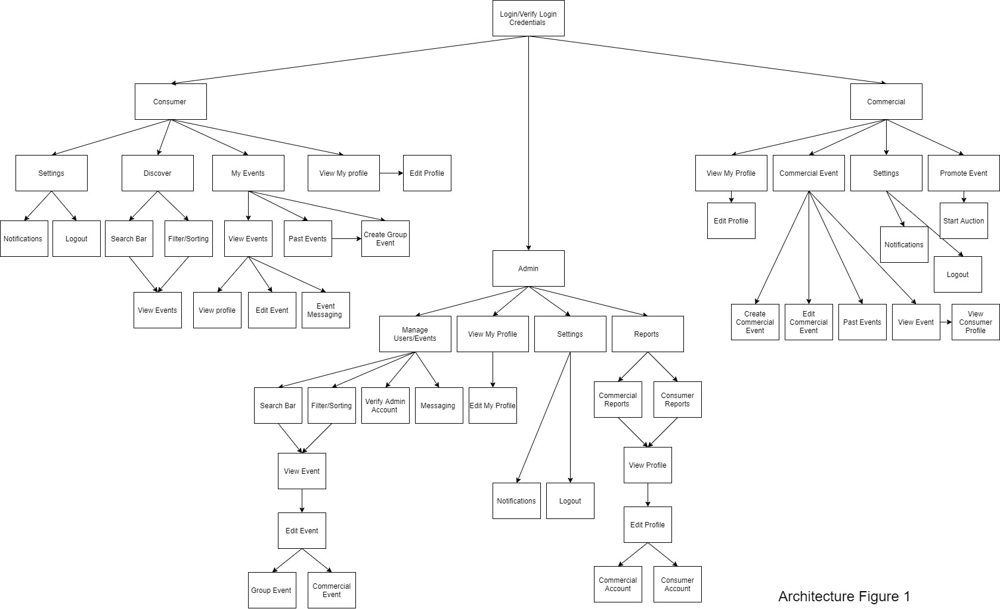4.2Login
Upon login the database will verify the login credentials. Once the credentials have been verified you will gain access to the account type that is associated with your credentials. If you do not have an account you will have the ability to create a new account. If the credentials already are set then the credentials will be verified and the User will have access to the account.
4.3Consumer User Overview
Upon login, the Consumer User will gain access to their account and will have access to “My Profile”, “My Events”, “Discover” and “Settings”. “My Profile” will show the Consumer Users profile information and allow them to change their profile information. The Consumer User will also have “My Events”; within “My Events” the Consumer User will see all the Events that they have created or joined. The Consumer User will have the ability to edit the Events that they have created.
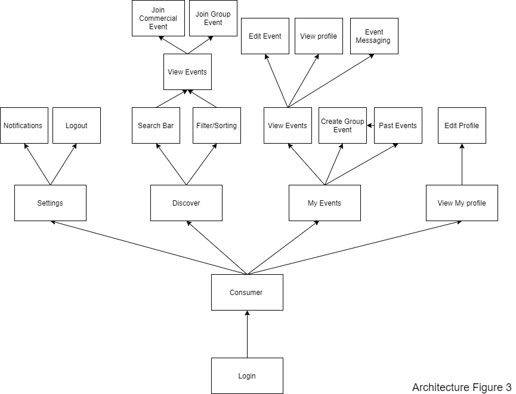4.3.1Discover
Upon login, they will see the Discover page. On the Discover page, they will be shown a list of relevant events from the database. They will have the option to use a search bar to search for profiles or events as well as Filtering and Sorting.
When a Consumer or Commercial profile has been found, the Consumer User will have the option to access it. When viewing the profile, the Consumer User will have the ability to block or report a user. Any block or report will be sent to the database for future use or review.
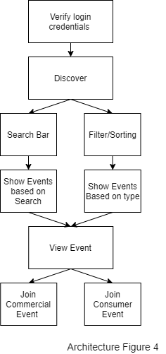4.3.2My Events
Upon selecting the “My Events” tab, the user will be shown a list of events they have created and a list of events they have joined. From there, they will be able to select an event to edit it, leave it, or message other participants. The Consumer will also be able to view consumer and commercial profiles that are a part of the Event.
4.3.3View My Profile
Once the Consumer User has logged in, they will be able to View their Profile in which they can see their own information and then edit it as well. After which the information is sent to the database to update the information.
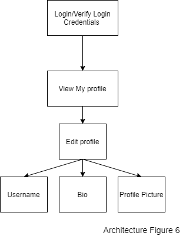4.3.4Settings
In order to view the settings and make changes, the Consumer User must first be logged in. A new session will be created. User login info will be verified by comparing it to the data in the Database. Successful verification will grant application access to the user. In settings, the Consumer User may go to Notifications or logout of their session. If they logout their session will be closed and then redirected to the login page. In the Notification settings the Consumer User may choose notification preferences (turn on or off individual notifications).
4.4Commercial User Overview
Upon login, the Commercial User will gain access to their account and will have access to “My Profile”, “Commercial Events”, “Settings”, and “Promote Event”. “My Profile” will show the Commercial Users profile information and allow them to change their profile information. The Commercial Users will have third party payment information in addition to the business information. The Commercial User will also have “Commercial Events”, this will show the Events created by the Commercial User and will allow them to edit and see participants. The Commercial User will also have “Settings” and “Promote Event”.
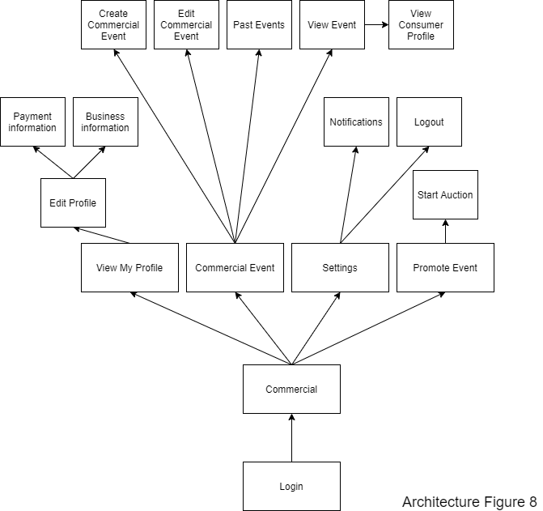
4.4.1Promote Event
The Commercial user after logging in will be able to “Promote Event”. They will then be able to start auctioning to Promote a chosen Event.

4.4.2View My Profile
In order to view their profile, the Commercial user must first be logged in. When a profile is viewed, information is retrieved from the database to be displayed in a standard format. The Commercial User will also be able to edit their own profile information including their picture/logo or their username. Edited profile information will replace the old information in the database. Payment information will be handled through a third-party API.
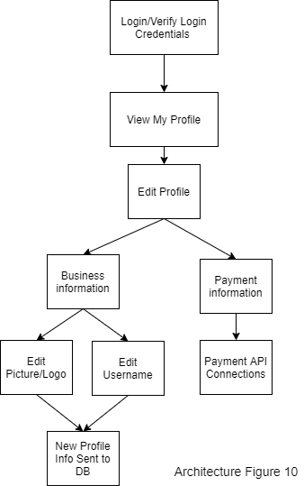4.4.3Commercial Event
In order to view and make changes to the Commercial Events the user must be logged in. The Users can choose between Creating an Event, Editing/Deleting an Event or viewing the Past Events. After choosing each of these functions the app will retrieve information from the database and the user can make changes to it. After the user is done editing the information will be updated to the database again.
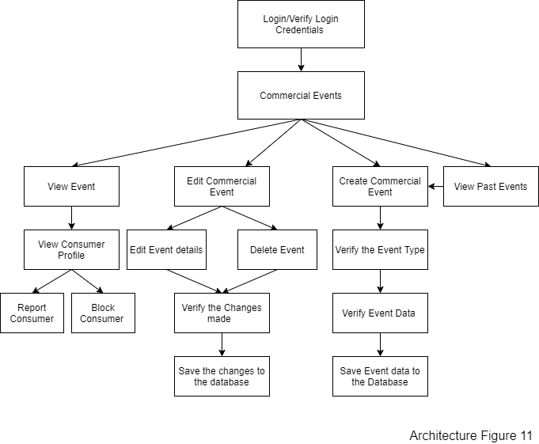4.4.4Settings
In order to view the settings and make changes, the Commercial user must first be logged in. A new session will be created. User login info will be verified by comparing it to the data in the Database. Successful verification will grant application access to the user. In settings, the Commercial user may go to Notifications or logout of their session. If they logout their session will be closed and then redirected to the login page. In the Notification settings the Commercial user may choose notification preferences (turn on or off individual notifications).
4.5Admin User Overview
Upon login, the Admin will gain access to their account and will have access to “My Profile”, “Manage Users/Events”, “Settings”, and “Reports”. “My Profile” will show the Admin profile information and allow them to change their profile information. The Admin User will also have “Manage User/Events”, this will give the Admin access to edit Accounts as well as Events Created by Consumers and Commercial Users. The Admin User will also have “Settings” and “Reports”.

4.5.1Manage Users/Events
After logging in, an admin user will be able to select the “Manage Users/Events” tab to be able to edit or delete events created by another user as well as approving commercial users to obtain a commercial account.
4.5.2View My Profile
In order to view their profile, the Admin user must first be logged in. When a profile is viewed, information is retrieved from the database to be displayed in a standard format. The Admin User will also be able to edit their own profile information including their picture/logo or their username. Edited profile information will replace the old information in the database.
4.5.3Reports
The Admin User must be logged in to view the reports. Admin Users will be able to view Consumer as well as Commercial Reports. After the Admin Users chooses which report they want to view the app will request the information from the database and the User can view it.
4.5.4Settings
In order to view the settings and make changes, the Admin user must first be logged in. A new session will be created. User login info will be verified by comparing it to the data in the Database. Successful verification will grant application access to the user. In settings, the Admin user may go to Notifications or logout of their session. If they logout their session will be closed and then redirected to the login page. In the Notification settings the Admin user may choose notification preferences (turn on or off individual notifications).
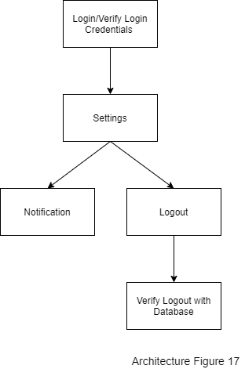5Design Views
5.1Create Consumer Account [3.1]
Consumer enters an email address. Consumer enters a username and is notified if the username is already taken. Consumer enters a password and is notified when the password is valid (ie. when it reaches or exceeds 6 characters). Consumer presses the create account button. Alternatively, they can create an account by signing into a social media account and allowing the application to capture the required information to create an account.
5.2Join Commercial Event [3.2]
Consumer will access a list of Commercial Events. Consumer select the Event of interest. Consumer will then have access to the Events description. Consumer can return to the list or join Event.
5.3Join Group Event (Consumer User)[3.3]
- On notification to join group Event, Consumer will view the description of the Event. Following the description the Consumer will have the option to reject or join Group event.
- Consumer will access a list of Group Events invitation. Consumer select the Group Event of interest. Consumer will then have access to the Events description. Consumer can return to the list or join Group Event.
5.4Edit Profile (Consumer User) [3.4]
Consumer User will have access to settings. On the Consumer User’s profile will be an option to edit profile. Current information fields will be presented. The Consumer User will be able to change these values and save them.
5.5View Profile (Consumer User) [3.5]
View My Profile will display the current user’s profile. They will be able to view their username, email, and bio. They will also be able to select the option to edit their profile.
5.6Login (Consumer User) [3.6]
The Consumer User opens Uvents and sees the option to login via 3rd party, username/password, or to create an account.
- Username and password: The Consumer User clicks on username/password and is brought to the login portal. The username and password boxes are displayed to the Consumer User. The Consumer User submits information. If the database rejects Consumer User information an error appears with an option to retry or recover password. If the database accepts the Consumer User information the Consumer User is brought to the home page.
- The Consumer User clicks on ‘3rd party login’ and is taken to a screen that displays the different 3rd party login options: Facebook, Twitter, Instagram.
- Facebook: The Consumer User clicks on login with Facebook. Facebook's login page is brought up and displays the Facebook Username and Password boxes. If the Facebook server rejects Consumer User information an error message appears.
- Twitter: The Consumer User clicks on login with Twitter. Twitter’s login page is brought up and displays the Twitter Username and Password boxes. If the Twitter server rejects Consumer User information an error message appears.
- Instagram: The Consumer User clicks on login with Instagram. Instagram’s login page is brought up and displays the Instagram Username and Password boxes. If the Instagram server rejects Consumer User information an error message appears.
5.7Discover (Consumer User) [3.7]
Filter/ Consumer User will press the discover button. A query will then be sent to the database requesting the data based on parameters chosen by the Consumer User. This data will then be returned to the Consumer User’s device. The Consumer User will then be presented with a discover view customized to the Consumer User’s preferences. This view will also include paid commercial event listings.
5.8Filter/Sorting (Consumer User) [3.8]
Consumer will press the filter button. The consumer will be presented with options to filter results in the discover view. On submission, the discover view will be presented with filtered results.
5.9Search bar (Consumer) [3.9]
Consumer User navigates to the Events screen and clicks on a search bar. The Search Bar is focused, the Keyboard appears, while the User can still freely navigate on the page. Asynchronous calls are made to display Events matching the text entered into the search bar. Event matching is made based on location, Event name, and Event organizer. As the User types in different keys, the list of Group and Commercial Events appears on the screen and filters according to the user’s input. These Events are filtered based on the input from the Search Bar and this filter works for location, Event name, and Event Organizer.
5.10Create Group Event (Consumer) [3.10]
A Consumer User navigates to the Group Event screen and clicks on the “Create Group Event” button. A text box showing price, location, date/time, description, and buttons to upload media, and create/edit this event are displayed. All fields are required except for uploading media. Once all the required fields are filled, the User can click a button “Create Event” which will create a Group Event in the database. This Group Event will be visible to all other Users.
5.11Edit Event (Consumer) [3.11]
Consumer User clicks on the ‘Edit Event’ button located inside an Event they own. A new window will appear allowing the Consumer User to change parts of the Event. This will display the options to the Consumer and based on their input will change the Event in different ways. Event details will be updated once the changes are confirmed.
5.12Event Messaging (Consumer) [3.12]
Consumer User clicks on the “Event Messaging” button from located inside an Event. A new window will appear that lists the Event Chat and the messages that have been exchanged with the Consumer Usersent in it.Messages will be listed This will display messages in sequential order starting with the most recent messages at the bottom.
5.13My Events (Consumer) [3.13]
Consumer users click on the “My Events” tab as found on the main menu. A new window will appear that lists all upcoming events that the Consumer user has subscribed to either by following the event or paying for a spot at the event. These events will be displayed in sequential order of date, with the closest event being listed first.
5.14Notifications (Consumer) [3.14]
Consumer Users clicks on the notifications tab as found on the main menu. A new window will appear and display a list of all notifications that the Consumer User has received. Each notification listed, will display its title, the first portion of its body, as well as any flags assigned to the notification such as unread, or important. Notifications may be If a notification is selected, the information about that notification will to expand to read display the full details,. or The Consumer User has the option to modify flags or complete removal completely remove flags.
5.15Settings (Consumer) [3.15]
Consumer users will be able to access the setting menu on the top of the page. It looks like a hamburger button. Once it clicked it went from horizontal hamburger button to vertical. When the user clicks the “setting”, a new window will appear and ask users to type a password one more time to verify identification. Once the users type the password, all information(Name, password, address, contact information etc.) will be displayed. And when users are done changing any information, they can click the “Confirm” to change settings and “Cancel” to cancel whatever they did.
5.16Logout (Consumer User) [3.16]
Consumer User sees the logout button. When pressed the Consumer User will be brought to the main login page. They are then “signed out” of their account.
5.17Create Account (Commercial User) [3.17]
Commercial Users click on the “Create New Account” button. A window will open where the Commercial User will be required to enter information like a valid email, unique username and password with at least 6 characters. Commercial users will also have an option to login through social media which shall integrate the consumers social media username.
5.18Business Information (Commercial User) [3.18]
Commercial User clicks business info button. A standard window opens to collect information about the business. Information like business name, business email address, business phone number, business description, business industry association, and business logo or picture.
5.19Payment Information (Commercial User) [3.19]
Commercial User clicks their preferred payment option. A standard window from that option’s service opens to collect payment information and confirm the purchase. When the purchase has been confirmed within the external option, a receipt will be displayed within Uvents.
5.20Account Approval (Commercial User) [3.20]
When a Commercial User submits their business information, the data is sent to the server and added to the database. A notification is sent to the admin to be approved.
5.21Edit Profile (Commercial User) [3.21]
Commercial user clicks on picture, description, etc. to edit information. Once user saves edits, the changes will be sent to the database, where the appropriate table's information shall be changed. Edits will be displayed after being saved.
5.22Login (Commercial User) [3.22]
The Commercial User opens Uvents and sees the option to login via 3rd party, username/password, or to create an account.
- Username and password: The Commercial User clicks on username/password and is brought to the login portal. The username and password boxes are displayed to the Commercial User. The Commercial User submits information. If the database rejects Commercial User information an error appears with an option to retry or recover password. If the database accepts the Commercial User information the Commercial User is brought to the home page.
- The Commercial User clicks on ‘3rd party login’ and is taken to a screen that displays the different 3rd party login options: Facebook, Twitter, Instagram.
- Facebook: The Commercial User clicks on login with Facebook. Facebook's login page is brought up and displays the Facebook Username and Password boxes. If the Facebook server rejects Commercial User information an error message appears.
- Twitter: The Commercial User clicks on login with Twitter. Twitter’s login page is brought up and displays the Twitter Username and Password boxes. If the Twitter server rejects Commercial User information an error message appears.
- Instagram: The Commercial User clicks on login with Instagram. Instagram’s login page is brought up and displays the Instagram Username and Password boxes. If the Instagram server rejects Commercial User information an error message appears.
5.23Create Commercial Event (Commercial User) [3.23]
Commercial User clicks on the “Create New Event” button, in which the Commercial User will have access to customize the Event that will be created. After the Event information has been specified the Commercial User will Create the Event. Once the Commercial User has created the Event the changes then will be sent to the database.
5.24Add Description (Commercial User) [3.24]
Commercial User clicks on the description box, types in information, and saves. The changes are saved to the database, where the appropriate table's information will be changed. The updated description is displayed to the Commercial User.
5.25Manage Event (Commercial User) [3.25]
Commercial User clicks on the Manage Events button. All ongoing/future events hosted by the Commercial User are fetched from the database and sent back to the Commercial User. The information is displayed in a list view.
5.26Edit Event (Commercial User) [3.26]
Commercial User clicks on the Edit Event button. The details of the Event, including location, date/time, description, etc. can be altered according to Commercial User's needs.
5.27Past Events (Commercial User) [3.27]
Commercial User clicks a navigation option to view Past Events. Uvents navigates to that page, past events created by the Commercial User are fetched from the database. Those events are displayed in a list to the Commercial User.
5.28Promote Event (Commercial User) [3.28]
The Commercial User shall have the option to promote their events. This option shall allow the Commercial User to add deals and/or discounts to the event.
5.29Start Auction / Place Bid (Commercial User) [3.29]
Commercial User clicks on the Start Auction / Place Bid button. Uvents then contacts the server and gets the required information regarding placing a bid. The Commercial User can then click on an input field and enter in the amount they would like to bid. The data is sent to the database and a message is displayed indicating whether the bid was placed successfully.
5.30Share Event (Commercial User) [3.30]
The Commercial User may share their Event. The Shareable link bar allows the Commercial User to copy a shareable link. The Commercial User may click the copy link button to copy the Event Link to their clipboard. The Commercial User may click on the Facebook icon which loads their Facebook application with a link to the Event ready to post. The Commercial User may click on the Instagram icon which brings them to their Instagram application with a link to the Event ready to post. The Commercial User may click on the Twitter icon which brings them to their twitter page with a link to the Event ready to post.
5.31Settings (Commercial User) [3.31]
Commercial Users will have the ability to adjust their settings. This will include personal settings, logging out of their account and modifying their notification settings.
5.32Logout (Commercial User) [3.32]
Commercial User sees the logout button. When pressed the Commercial User will be brought to the main login page. They are then “signed out” of their account and redirected to the home screen.
5.33View Commercial Reports (Admin User) [3.33]
The Admin User will have the ability to view Commercial User reports. The reports display text from a Commercial User suggesting why the community guidelines have been broken.
5.34View Consumer Reports (Admin User) [3.34]
The Admin User will have the ability to view Consumer User reports. The reports display text from a Consumer User suggesting why the community guidelines have been broken.
5.35Edit Profile (Admin User) [3.35]
The Admin User will have the ability to edit their own profile information. This profile information includes a username and profile picture. If an Admin User decides to change their profile picture, the Uvents application will direct them to their default photo application where they can select their desired profile picture. If the Admin User decides to change their username, they will be given the opportunity to rename their username.
Once the Admin User is satisfied with their changes, they may officially update their profile with the Update Profile button. The update profile button will send requests from the Server to the Database to check if the chosen picture is acceptable and if the username does not already exist among any other Uvents Account. If the inputs are acceptable, then the Admin User will be displayed a success screen. Otherwise, the Server will send a message to the GUI informing the Admin User that either the profile picture or the username is unacceptable.
5.36Login (Admin User) [3.36]
The Admin User opens the app and sees the option to login via 3rd party, username/password, or to create an account.
- Username and password: The Admin User clicks on username/password and is brought to the login portal. The username and password boxes are displayed to the Admin User. The Admin User submits information. If the database rejects Admin User information an error appears with an option to retry or recover password. If the database accepts the Admin User information the Admin User is brought to the home page.
- The Admin User clicks on ‘3rd party login’ and is taken to a screen that displays the different 3rd party login options: Facebook, Twitter, Instagram.
- Facebook: The Admin User clicks on login with Facebook. Facebook's login page is brought up and displays the Facebook Username and Password boxes. If the Facebook server rejects Admin User information an error message appears. If the Facebook server accepts Admin User information the Admin User is brought to the Uvents’ home page.
- Twitter: The Admin User clicks on login with Twitter. Twitter’s login page is brought up and displays the Twitter Username and Password boxes. If the Twitter server rejects Admin User information an error message appears. If the Twitter server accepts Admin User information the Admin User is brought to the Uvents’ home page.
- Instagram: The Admin User clicks on login with Instagram. Instagram’s login page is brought up and displays the Instagram Username and Password boxes. If the Instagram server rejects Admin User information an error message appears. If the Instagram server accepts Admin User information the Admin User is brought to the Uvents’ home page.
5.37Create Account (Admin User) [3.37]
Admin User enters an email address. Admin User then enters a username and is notified when the username has been taken. Admin then creates a password and is notified when it is valid. The Admin is then asked for their name. The admin user then clicks the create account button.
5.38Edit Users (Admin User) [3.38]
The Admin User will have the ability to edit user information. The Admin User will navigate to the Edit Users screen, where the Admin User will be able to change usernames. The Admin User will also be to add or remove any social media connections to the User's account. The Admin User will also have the option to delete the User's account, and they will need to provide a reason for deleting a User's account. Once the changes are verified, the Admin User will be able to save these changes to the database.
5.39Edit Events (Admin User) [3.39]
The Admin User will have the ability to edit event information. The Admin User will be able to change the Event location, time, participants, title, description, type, and price. The Admin User will also have the option to delete the event. The Admin User will need to provide a reason for deleting the event. The changes will be verified, and then the Admin User can save them to the database.
5.40Message (Admin User) [3.40]
The Admin User will have the ability to message other all other Users. There will be a separate chat page with area to input text and area to view the participants of the conversation, as well as their messages. Messages can be deleted by holding on them.
5.41Notifications (Admin User) [3.41]
The Admin User will have the ability to see different types of notifications for different events on the Events page. Once the Admin User clicks on the Event, there is a button to “View Notifications”.
5.42Settings (Admin User) [3.42]
The Admin User will have the ability to edit their settings and notifications
5.43Logout (Admin User) [3.43]
Admin User sees the logout button. When pressed the Admin User will be brought to the main login page. They are then “signed out” of their account.
5.44View Consumer Profile [3.44]
Consumer Users will be able to view other Consumer User’s profiles if they mutually joined the same event. Commercial Users will be able to view Consumer User’s profiles if they are attending the Commercial’s hosted event. Admin can view any Consumer profile.
5.45View Commercial Profile [3.45]
Consumer and Admin Users can view all Commercial profiles on the Commercial Profiles page.
6Design Viewpoints
6.1Create Consumer Account [3.1]
Design Viewpoints
The option to create a username and password is displayed to the consumer. An option to sign in with social media is also displayed. The server shall authenticate the username once it has been typed in ensuring that it is unique. Client-side validation will ensure that the password reaches or exceeds 6 characters, and that the email address is in the correct format. When the consumer clicks 'Create Account' and the password, username, and email are authenticated, the password will be hashed and added to the database along with the email and username. [DF.1]
Design Elements
A text field for the user to type in their email address, a text field for the user to type in their username, and a text field for the user to type in their password is displayed on the screen. A button that displays the words “Create Account” is displayed. A button that displays the words “Social Media Login” is displayed. [DF.1]
| Name | Type | Purpose | Description |
|---|---|---|---|
| "Email Address" Text Field | Entity | Allow the User to enter their email address. | A User will type in their email address that will be linked to their account. Client side will check if email address is in the correct format. |
| "Username" Text Field | Entity | Allow the User to enter a username. | A User will type in a Username to be saved. The server shall authenticate the username once it has been typed in ensuring that it is unique. |
| "Password" Text Field | Entity | Allow the User to enter a password. | The User will type in a password for their account. Client-side validation will ensure that the password reaches or exceeds 6 characters. |
| "Create Account" Button | Entity | Allow the User to create their account. | When the consumer clicks the 'Create Account' button, the password, username, and email are authenticated. The password will be hashed and added to the database along with the email and username. |
| "Social Media Login" Button | Entity | Allow the User to use their social media to log in. | A button will be displayed that will give the user an option to sign into their social media account. |
6.2Join Commercial Event (Consumer User) [3.2]
Design Viewpoints:
The Design Viewpoints should behave as described in the following points:
- List of Events is displayed to the consumer.
- On Event selection, a description of the selected event is displayed to the user with an option button to return or join event.
- Interface between HMI and Server
- Interface between Server and Database
Design Elements:
Below is a list of Design Elements that compose the Join Commercial event:
- List of Events
- "View Event" Button
- View of Event Description.
- "Join Event" Button.
- "Return to List" Button.
| Name | Type | Purpose | Description |
|---|---|---|---|
| List of Events | Entity | To provide a view of all the Events to the consumer. | The list of events is a list that provides the user the option to see all the events available to them in a list format setting. |
| "View Event" Button | Entity | To provide access to Event’s details. | A button is available on each event so the user can click on it to see the details of the event. |
| View of Event Description. | Entity | A view which holds the information of the Event, in order for the consumer to read. | The description is where the user can see the details information of that event. It will have information such as location, time, event host, and description. |
| "Join Event" Button. | Entity | A button to allow a consumer to Join a desired Event. | Join event can be clicked in order to the user to join that event. |
| "Return to List" Button | Entity | A button to return to the List of Events, after reading the description of the Event. | The return button will be an option to take the user back to list of events, that way the user can continue to investigate other events. |
6.3Join Group Event (Consumer User)[3.3]
Design Viewpoints:
The Design Viewpoints should behave as described in the following points:
- Notification icon is provided to the user view.
- Notification is provided on an invitation.
- List of Event invitation is provided on the notification and the list of group events.
- On Event click, Consumer can select to join or return.
- Interface between HMI and Server
- Interface between Server and Database
Design Elements:
Below is the list of Design Elements that compose the Join Commercial event. These Elements will give the consumer options to join, view, or decline Group events.
- List of Group Events
- "View Group Event" Button
- View of Group Event Description.
- "Join Group Event" Button.
- "Decline Group Event"
- "Return to List" Button.
| Name | Type | Purpose | Description |
|---|---|---|---|
| List of Group Events | Entity | To provide a view of all the Group Events to the consumer. | The list of events is a list that provides the user the option to see all the events available to them in a list format setting. |
| “View Group Event" Button | Entity | To provide access to Group Event’s details. | A button is available on each event so the user can click on it to see the details of the event. |
| View of Group Event Description. | Entity | A view which holds the information of the Group Event, in order for the consumer to read. | The description is where the user can see the details information of that event. It will have information such as location, time, event host, and description. |
| "Join Group Event" Button. | Entity | A button to allow a consumer to Join a desired Group Event. | Join event can be clicked in order to the user to join that event. |
| "Decline Group Event" | Entity | A button to decline invitations to Group events from other users. | The decline option provides a way for the user to decline an invitation to join a group event. When clicked the event will not long available to the user invited. |
| "Return to List" Button. | Entity | A button to return to the List of Group Events, after reading the description of the Group Event. | The return button will be an option to take the user back to list of events, that way the user can continue to investigate other events. |
6.4Edit Profile (Consumer User) [3.4]
Design Viewpoints:
Setting icon is presented to the customer. On "edit profile" click, a new activity is presented on the screen with the personal information fields already filled with current information. The user will be able to edit them. Input validation messages should be provided (ex: e-mail, username). Upon information change, the save and the cancel buttons are available with their perspective actions of canceling the operation or saving it.
Design Elements
Below is a list of Design Elements that compose the Edit Profile. These elements will give the Consumer the ability to edit their Email, Username, Password. They will be able to save these changes or discard them.
- "Edit profile" button/option
- "Email Address" Text Field
- "Username" Text Field
- "Password" Text Field
- "Save" Button
- "Cancel" Button
| Name | Type | Purpose | Description |
|---|---|---|---|
| "Edit profile" button/option | Entity | Provide access Profile editing. | A button that once selected will open the options to edit profile. |
| "Email Address" Text Field | Entity | Provide the option to edit their email. | A text Field where the user will enter their email |
| "Username" Text Field | Entity | Provide the option to edit username. | A text Field where the user will enter their Username |
| "Password" Text Field | Entity | Provide the option to edit password. | A text Field where the user will enter their Password. |
| "Save" Button | Entity | Allow user to save changes. | If any changes have been made to the Email, Username or Password text fields. This button will allow for those changes to be saved to the database. |
| "Cancel" Button | Entity | Allow user to cancel the process. | If any changes have been made to the Email, Username or Password text fields. This button will cancel any would-be changes and revert the fields to the original values. |
6.5View Profile (All User) [3.5]
Design Viewpoints:
A user’s profile is displayed. Within that profile is an option to report the user. On click, an admin user will be notified, and informed which user has been reported. If the block user button has been pushed, that user is added to a list of users that the current user does not want to receive messages or event invitations from. [DF.3]
Design Elements
A button is displayed that reads “View Profile.” Once that button is clicked, two more buttons are displayed, “Report User” and “Block User.” [DF.3]
| Name | Type | Purpose | Description |
|---|---|---|---|
| View Profile Button | Entity | Allow Consumer user to pull up the Profile view. | A button which when clicked will signal the system to switch to the Profile view. |
| Report User Button | Entity | Allow Consumer user to report another user. | A button which when clicked send a notification to the admin users that the logged in user has reported the user for the profile that is currently displayed. |
| Block User Button | Entity | A button which when clicked sends two users to the server (the user logged in and the user for the profile that is currently displayed). The server will modify the database for the user that is logged in so it knows to ignore messages and event invitations from the other user. |
6.6Login (Consumer User) [3.6]
Consumer User has option to login via username/password or via 3rd party.
- Username and password: Consumer User login information is submitted to server and put through hash to check for existing user as well as correct username and password. ‘Remember me’ option is taken into account. If information is incorrect the server returns an error message with option to recover password/account information and to re-submit login information. If the database accepts the submitted information the Consumer User will be sent to the home page of Uvents.
- Facebook: Information is sent to Facebook server for verification. If server accepts request the Consumer User is brought to the home page of Uvents.
- Twitter: Information is sent to Twitter server for verification. If server accepts request the Consumer User is brought to the home page of Uvents.
- Instagram: Information is sent to Instagram server for verification. If server accepts request the Consumer User is brought to the home page of Uvents.
Design Elements:
| Name | Type | Purpose | Description |
|---|---|---|---|
| User Token | Entity | Security Measure to prevent malicious intent | A piece of data that is sent between the device and server, allowing the accounts |
| Login with 3rd Party | Entity- Button | Takes the Consumer User to login page with 3rd party options | A button that takes the Consumer User to the 3rd party login options page |
| Facebook Login Button | Entity- Button | Sends Consumer User to Facebook login API | A button that sends the Consumer User to the Facebook API login page and gathers information from API for Uvents login |
| Twitter Login button | Entity- Button | Sends Consumer User to Twitter Login API | A button that sends the Consumer User to the Twitter API login page and gathers information from API for Uvents login |
| Instagram login button | Entity- Button | Sends Consumer User to Instagram Login API | A button that sends the Consumer User to the Instagram API login page and gathers information from API for Uvents login |
| Username/password button | Entity- Button | Takes the Consumer User to Uvents login page | A button that takes the Consumer User to the Uvents login page to login with their Uvents username and password |
| Username textbox | Entity- Textbox | Input for username to be sent to the server | A textbox that collects the Consumer User’s username to be sent to the server for login
|
| Password textbox | Entity- Textbox | Input for password to be sent to the server | A textbox that collects the Consumer User's password to be sent to the server for login
|
| Remember me checkbox | Entity- Checkbox | Input to tell the server/device to remember login information for device | A checkbox that tells the device to locally store this login information in order to save the user time |
| Recover password button | Entity- Button | Takes the Consumer User to the recovery screen | A button that takes the Consumer User to the recovery screen |
| Submit Button | Entity- Button | Sends inputs (username & password) to the server for login verification | A button that sends the username & password to the server for login verification
|
| Back Button | Entity- Button | Takes the the Consumer User to the main login page | A button that takes the Consumer User to the main login page |
6.7Discover (Consumer User) [3.7]
Design Viewpoints:
Consumer presses the discover button. Server sends request to database. Database returns list of events to server. events list is loaded on application.
Design Elements:
The following elements will be visible to the Consumer User upon entering the discover view.
- Events Icons [DIV Figure 1]
- Entity row & col from database [DIV Figure 1]
- Filter/Sort Button [DIV Figure 1]
| Name | Type | Purpose | Description |
|---|---|---|---|
| Events Icons | Entity | Allows user to view description of event | Icons that represent the events. They will be links that bring up another view with a greater description of the event. |
| Entity row & col from database | Entity | Allows for the dynamic viewing of Icons | This entity will allow for the presentation of the icons dynamically. |
| Filter/Sort Button | Entity | Allows for the filtering of results | A button that will bring access to filtering and sorting properties. |
6.8Filter/Sorting (Consumer User) [3.8]
Design Viewpoints:
App sends request to server. Server gathers details from database. Server sends view to App.
Design Elements:
The following elements will control the elements sent to the database, restricting the results returned to the application.
- Time frame scale [DIV Figure 1]
- Location input [DIV Figure 1]
- Cost [DIV Figure 1]
- Event type selector [DIV Figure 1]
| Name | Type | Purpose | Description |
|---|---|---|---|
| Time frame scale | Entity | To allow users to view specific events. | This will alter the presentation of the events to exclude any events not in the time frame. It will be a scale. |
| Location input | Entity | To allow users to specify events at a specific location | This will be a location input that will remove events from the event list to exclude any events not at the location |
| Cost | Entity | To allow users to sort events by cost | The cost will allow users to specify budgetary constraints |
| Event type selector | Entity | Allows the user to filter by event type. | An input that will filter out any event that does not include the specified type tag. |
6.9Search Bar (Consumer User) [3.9]
Design Viewpoints:
- Verify the Keyboard appears on the Screen
- Verify the page is scrollable to enable navigation across the page
- Verify the user input is visible in the Search Bar
- User input is sent to the server and the correct list of events is returned back to the client and displayed appropriately on the screen
- Every Event in the list should be clickable
- Interface of Search Bar input field allows user to enter different characters with no limit
Design Elements:
| Name | Type | Purpose | Description |
|---|---|---|---|
| Keyboard | Entity | Allow user to type characters | System tool that has different characters of different languages and allows users to provide input |
| Search Bar Input | Entity | Field to accept input | This input field will allow users to enter, modify, and remove characters entered from the keyboard and it will filter the results based on the input |
| List View | Entity | Area to display the results | This area will display the filtered results based on the input from the Search Bar |
| List View Item | Entity | Item in the List View that is clickable | The List View will consist of Items which will be clickable. Upon click on an Item that represents an Event, the user will navigate to an Event Details screen. |
6.10Create Group Event (Consumer User) [3.10]
Design Viewpoints:
- Verify that all text fields are displayed correctly
- All Consumer Users should see a button “Create Group Event” on the “Group Event” screen
- Keyboard must appear on the screen once any text field is pressed
- All input must be verified before it’s sent to the server for profanity and character limit
- Page must be scrollable for an easier navigation for the user if they need to change other fields
- When the input is submitted it must be saved to the database. If any errors occur, the user must be notified and provided a way to solve the problems
- Proper navigation upon the Event creation
Design Elements:
| Name | Type | Purpose | Description |
|---|---|---|---|
| Group Event Screen | Entity | Display all Group Events | This screen will allow consumer users to see all group events and will also let them create their Group events |
| Create Group Event Button | Entity | Start the process of creating a Group Event | This button will open another screen with input fields to let a Consumer User create a Group Event |
| Price Input Field | Entity | Allows users to enter price | Users will be able to enter the Event price in this field |
| Location Input Field | Entity | Allows users to enter the event location | Users will be able to enter the Event location in this field. They can use either their location or will be provided an interface to search for and enter location manually |
| Date/Time Input Field | Entity | Allows users to enter the event date and time | This field will provide a graphical interface to enter the date and time of the event. It can either be done by using a system built-in calendar system or by manually entering information into these fields |
| Event Description Input Field | Entity | Allows users to enter the event description | This text field will accept users input and will store the event description |
| Upload Media Button | Entity | Allows users to upload media to that event | This button will allow users to upload media that will be displayed on the event screen. Users should be able to remove / update that media in the future |
| Create Button | Entity | Allows users to start a process of creating an event | This button will verify all input fields for profanity and will make sure all required fields were filled. After the input is verified, the data is sent to the server and is stored in the Group Events table. |
| Edit Button | Entity | Allows the Group Event creators to edit their events | This button will be displayed only for the Consumer Users created the Group Event to edit their events. The Users can edit any information regarding the event. Once the button is clicked, the data is verified and sent to the server upon the successful verification. |
| Events View | Entity | Displays the list of all Group Events | This view allows all users to see the Group Events. It will also contain interface allowing the creators of events to start editing their events. |
6.11Edit Event (Consumer User) [3.11]
- Verify that the correct options are displayed on the page
- Verify that when any of the options are pressed, the Consumer is directed to the correct screen to allow them to make changes
- Once changes are input allow the user to view them
- Verify that the Consumer has to press ‘Confirm’ twice before changes are sent to the database and the page is refreshed to display the new changes
- Verify that the ‘Cancel’ button directs the Consumer back to the Event page and discards the changes
Design Elements:
| Name | Type | Purpose | Description |
|---|---|---|---|
| Edit Event Button | Entity | To allow the User to make provisional changes to the Event data. | This allows the user to access and change all of the data that pertains to the Event being accessed. |
| Event | Class | An object to display and handle all of the information for each Event. | This object will contain all of the logic for the Event page and Event-specific member variables that will be stored on the database. |
| Edit Event Display | Entity | Displays the Event’s data that can be changed. | This will Display the Event information that the User can change pertaining to the specific Event. |
| Edit Event Name Variable | Entity | Displays and allows the User to change the ‘Name’ variable of the Event being edited. | This allows the User to access and change what is stored in the ‘Name’ variable. |
| Edit Event Date Variable | Entity | Displays and allows the User to change the ‘Date’ variable of the Event being edited. | This allows the User to access and change what is stored in the ‘Date’ variable. |
| Edit Event Location Variable | Entity | Displays and allows the User to change the ‘Location’ variable of the Event being edited. | This allows the User to access and change what is stored in the ‘Location’ variable. |
| Edit Event Description Variable | Entity | Displays and allows the User to change the ‘Description’ variable of the Event being edited. | This allows the User to access and change what is stored in the ‘Description’ variable. |
| Edit Event ‘Confirm’ Button | Entity | After the User is done making the changes that they would like to the Event, they can hit the ‘Confirm’ button twice and the new data will be sent to the database and the page will be refreshed to display the new information. | This button is so that the User can apply their changes in a safe and non-haphazard way. This makes it safe for the User to play around with changes that they may want to apply. |
| Edit Event ‘Cancel’ Button | Entity | If the User decides against the provisional changes that they made, they can hit the ‘Cancel’ button twice to discard the changes that they made. | This button is so that the User can discard changes that they no longer want. This is also done in a safe way such that the User does not accidentally discard changes that they wanted. |
6.12Event Messaging (Consumer User) [3.12]
Design Viewpoints:
- Session-id verified
- Populate message page with messages from the database
- Interface of the messaging allows Consumer to send messages
- Interface of the messaging allows Consumer to react to messages that have been sent
Design Elements:
| Name | Type | Purpose | Description |
|---|---|---|---|
| ‘Event Messaging’ Button | Entity | To allow a Consumer to access and use the Event Messages that they have permissions for. | A button that switches the view, retrieves data from the database and populates the Event Messages page with the information. |
| Messages | Class | An object to access, send and receive messages for specific events. | This object will contain all of the logic needed for the messages portion to function and member variables that will be tracked and stored in the database. |
| Event Messages Display | Entity | Displays the messages in sequential order based on date. | This will display messages in an easy-to-read way for the Consumer to view. |
| Event Messages Name View | Entity | Displays the name of the other Users that have sent each message on the page. | This will display the names of users when they send messages to identify who said what in the chat. |
| Event Messages Date View | Entity | Displays the date that goes with each message. This is dual purpose as it can also be used to display the messages in the correct order. | This will display the date of when each message was sent, this can be used to keep a log of the conversation and can also be used in the display logic. |
| Event Messages ‘Send’ Button | Entity | To allow a Consumer with sufficient permissions to send messages to the other Users of the same Event. | A button that will send the message to the database to be stored and will re-populate the page with the new message (with accompanying data). |
6.13My Events (Consumer User) [3.13]
- Session id verified
- Interface between session ID and database of local events
- Filter of local events to local events this specific Consumer user is subscribed to
- Interface between social media and server
- Separation of each event
Design Elements:
| Name | Type | Purpose | Description |
|---|---|---|---|
| ‘My Events’ Button | Entity | Allow a Consumer user to view events that they are subscribed to. | A button that retrieves the database of local events, and display those events in which the Consumer user is subscribed to. |
| Events | Class | An object to more easily access and manipulate events. | This object will contain members such as date, location, eventOwner (others to be determined), associated getters and setters, and other functions to better work with events. |
| Event Display | Entity | Give a quick summary to the Consumer user of an event. | This will be recurring boxes of various events. This box will showcase the event name, date, and location of the events that the consumer user is subscribed to. |
| Event Name View | Entity | Gives an event a name. | This is used to give Consumer users a name to remember certain events by. |
| Event Date View | Entity | Gives an event a date. | Used to give Consumer users a timeline of when events will be occurring. |
| Event Location View | Entity | Gives an event a location. | Used to give Consumer users an exact location of where an event will be taking place. |
6.14Notifications (Consumer User) [3.14]
Design Viewpoints:
- Verify connection to database
- update list of notifications with new notifications received and expired notifications removed.
- Interface of the notifications allows users to delete or flag notifications.
Design Elements:
| Name | Type | Purpose | Description |
|---|---|---|---|
| Notifications Button | Entity | Allow a User to view Notifications they have received. | A button that retrieves the database of notifications in the user’s inbox, and displays those notifications. |
| Notifications | Class | An object to more easily access and manipulate notifications. | This object will contain members such as date,title, body(others to be determined), associated getters and setters, and other functions to better work with notifications. |
| Notification title | Entity | Gives the main point of the notification. | A text box displaying which function of the application caused the notification to be sent |
| Notification Body | Entity | Gives the details that come with the notification. | The text contained within the notification |
| Notification options bar | Entity | A popup menu that displays when selecting a notification, allowing for deletion, flagging, muting, and other messaging options. |
6.15Settings (Consumer User) [3.15]
- Session-id verified
- Check session-id and database and display correct information displayed (Name, password, address, contact information etc.)
- Able to change information.
- Ask one more time when they click the “Confirm” button.
- Cancel the change when users click the “Cancel” button.
- After the users change the information, change the information in the database, and display the changed information of users.
Design Elements:
| Name | Type | Purpose | Description |
|---|---|---|---|
| Setting button | Entity | Allow users to go “setting menu” and change the information of users. | A button that retrieves the database of information of users, and displays all information of users |
| Name | Entity | Show the name of users | This used to show the name of the users |
| Password | Entity | Able to change the password | There are two blank boxes. One is for the old password and another is for the new password. The users should type the old password to change the password. |
| Phone number | Entity | Show the phone number and able to change the number | Users can check their phone numbers and are able to change their phone numbers if needed. |
| Email address | Entity | Show the email address and able to change the email address | Users can check their email addresses and are able to change their email addresses if needed. |
| Home address | Entity | Show the home address and be able to change the home address. | Users can check their home addresses and are able to change their home address if needed. |
| Confirm button | Class | Able to change the all changed information by clicking the button. | This button allows the users to change the information they need to. It includes all information of the database and changes that when it is completed. And it could be a “blue” color. |
| Cancel button | Entity | Able to cancel the activities that users did. | This button allows the users to cancel what they did. It is a button type and it could be a “red” color. |
6.16Logout (Consumer User) [3.16]
Consumer User information is sent to the server. If logout is accepted, the server will send confirmation to the Consumer User, who’s information will be removed from the device.
Design Elements:
| Name | Type | Purpose | Description |
|---|---|---|---|
| User Token | Entity | Security Measure to prevent malicious intent | A piece of data that is sent between the device and server, allowing the accounts |
| Logout Button | Entity- Button | Takes the Consumer User to the main login page | A button that informs the server of logout and clears information on device, then takes the Consumer User to the main login page |
6.17Create Account (Commercial User) [3.17]
Design Viewpoints:
The Create Account button is displayed on the screen which allows Commercial Users to create an account. Clicking the button will send the request a new session for the user, the app then prompts them to enter their email address, password and a username. The information entered will be verified by the database to check for any existing accounts with that email/username. After everything is verified the Account will be created and will be added to the database. An option to sign in using Social Media is also displayed.
- Session Id verified
- Email address verified
- Password verified
- Username verified
- Interface between social media and server
- Interface between Server and Database
- Database saves collected information
Design Elements:
The Create Account function is a combination of entities like textboxes and buttons which allows the user to create an account.
| Name | Type | Purpose | Description |
|---|---|---|---|
| Session ID | Entity | Security Measure to prevent malicious intent | A piece of data that is sent back and forth from front end to server, allowing the accounts more security. |
| Create Account Button | Entity | Allows a consumer to create a Uvents account | A button that sends information to the database to verify whether or not the inputted information is acceptable for creating a new account. |
| “Email Address” Textbox | Entity | Allows a consumer to enter a valid email address. | A textbox that allows the consumer to enter the email address they want to use for creating an account. |
| “Username” Textbox | Entity | Allows a consumer to enter a valid username. | A textbox that allows the consumer to enter a username they want to use for creating an account. |
| "Password" Textbox | Entity | Allows a consumer to enter a password. | A textbox that allows the consumer to enter a password they want to use for creating an account. |
| “Login using social media” button | Entity | Allows consumers to create an account using their social media. | A button that sends information to the database to ensure that the user can create a Uvents account using the information integrated with their social media accounts. |
6.18Business Information (Commercial User) [3.18]
Design Viewpoints:
The Business Info button will open a new session Id for the user which will connect the user to the database that contains information about the business. The user is then allowed to update/change information they desire and when done the database is updated with the received information.
- Session Id verified to open page
- Phone number verification feedback
- Email address verification feedback
- Location verification feedback
- Interface between Server and Database
- Database saves collected information
Design Elements:
The business information function is a combination of entities like textboxes and buttons. The purpose of these entities is to ensure that the user will be able to update information they desire.
| Name | Type | Purpose | Description |
|---|---|---|---|
| Session ID | Entity | Security Measure to prevent malicious intent | Data that will be used as a security measure that will be passed between the Front end and the server to verify Account. |
| Add Info button | Entity | A button to allow user input information. | A button that opens the info view for the commercial to enter information about their business. |
| Phone number textbox | Entity | A piece of data that will allow for the Phone number of the user to be stored. | Data that will save the phone number to reach the commercial user |
| Email address textbox | Entity | Allows a commercial user to enter a valid email address. | A textbox that allows the commercial user to enter the email address they want to be reached on. |
| Location textbox | Entity | Allows a commercial user to enter a valid business address. | A textbox that allows the commercial user to enter the physical address of their business. |
| Map API | Entity | Allows a commercial user to select their actual business address. | An API that allows the commercial user to select the physical address of their business on a map. |
6.19Payment Information (Commercial User) [3.19]
Design Viewpoints:
After the User clicks on the payment option, a new session Id is created. The information entered will go through the database for verification and then is stored to the database. When the purchase is completed a receipt will be displayed with data retrieved from the database.
- Session Id verified
- Interface between HMI and Server
- Interface between Server and Database
- Server queries table in database
- Relationship between server and third party payment established
- Database saves edited information
- Changes to queried table
Design Elements:
The entity Price holds the price of the service being purchased.
| Name | Type | Purpose | Description |
|---|---|---|---|
| Price | Entity | Profits | Will determine how much will be charged to the user’s account in exchange for a service. |
6.20Account Approval (Commercial User) [3.20]
Design Viewpoints:
The commercial user’s account verification status will be stored here
- Session Id verified
- Interface between HMI and Server
- Interface between Server and Database
- Database saves added information
- Notification is sent to admin
- Changes to queried table
Design Elements:
This will show the status of the account and whether is has been verified the admin.
| Name | Type | Purpose | Description |
|---|---|---|---|
| Account approval status | Entity | Verify account has/hasn’t been approved | Store account approval so that it can be checked prior to giving user permissions. |
6.21Edit Profile (Commercial User) [3.21]
Design Viewpoints:
The edit profile shall allow the user to update information from the user’s profile and then it will query the updated table to verify the update
- Session Id verified
- Interface between HMI and Server
- Interface between Server and Database
- Server queries table in database
- Database saves edited information
- Changes to queried table
Design Elements:
Edit Profile (Commercial) Table identifies elements for the Edit Profile (Commercial) Concern. [3.20] These elements perform the duties of security, displaying and changing values held within said concern.
| Name | Type | Purpose | Description |
|---|---|---|---|
| Session Id | Entity | Security Measure to prevent malicious intent | Data that will be used as a security measure that will be passed between the Front end and the server to verify Account. |
| Profile Picture | Entity | A piece of data that displays an image chosen by the commercial | The Profile Picture will be able to be edited and will then be sent to the server which will be verified and then will be stored in the database. |
| Name | Entity | A piece of data that helps the commercial be identified through text | The commercial’s Name can be edited and will then be sent to the server which will be verified and then will be stored in the database. |
| Bio | Entity | Text field to display information about the commercial | The bio textbox can be edited and saved within the database. |
| Username | Entity | Commercial Uvents ID used for security measures | An ID that verifies the commercial is in fact the commercial, will be changed in the database and the server will update the username in the commercial’s view of the profile. |
6.22Login (Commercial User) [3.22]
Commercial User has the option to login via username/password or via 3rd party.
- Username and password: Commercial User login information is submitted to the server and put through a hash to check for existing users as well as correct username and password. ‘Remember me’ option is taken into account. If information is incorrect the server returns an error message with option to recover password/account information and to re-submit login information. If the database accepts the submitted information the Commercial User will be sent to the homepage of Uvents.
- Facebook: Information is sent to Facebook server for verification. If the server accepts the request the Commercial User is brought to the homepage of Uvents.
- Twitter: Information is sent to Twitter server for verification. If the server accepts the request the Commercial User is brought to the homepage of Uvents.
- Instagram: Information is sent to Instagram server for verification. If the server accepts the request the Commercial User is brought to the homepage of Uvents.
Design Elements:
| Name | Type | Purpose | Description |
|---|---|---|---|
| User Token | Entity | Security Measure to prevent malicious intent | A piece of data that is sent between the device and server, allowing the accounts |
| Login with 3rd Party | Entity- Button | Takes the Commercial User to login page with 3rd party options | A button that takes the Commercial User to the 3rd party login options page |
| Facebook Login Button | Entity- Button | Sends Commercial User to Facebook login API | A button that sends the Commercial User to the Facebook API login page and gathers information from API for Uvents login |
| Twitter Login button | Entity- Button | Sends Commercial User to Twitter Login API | A button that sends the Commercial User to the Twitter API login page and gathers information from API for Uvents login |
| Instagram login button | Entity- Button | Sends Commercial User to Instagram Login API | A button that sends the Commercial User to the Instagram API login page and gathers information from API for Uvents login |
| Username/password button | Entity- Button | Takes the Commercial User to Uvents login page | A button that takes the Commercial User to the Uvents login page to login with their Uvents username and password |
| Username textbox | Entity- Textbox | Input for username to be sent to the server | A textbox that collects the Commercial User’s username to be sent to the server for login
|
| Password textbox | Entity- Textbox | Input for password to be sent to the server | A textbox that collects the Commercial User's password to be sent to the server for login
|
| Remember me checkbox | Entity- Checkbox | Input to tell the server/device to remember login information for device | A checkbox that tells the device to locally store this login information in order to save the user time |
| Recover password button | Entity- Button | Takes the Commercial User to the recovery screen | A button that takes the Commercial User to the recovery screen |
| Submit Button | Entity- Button | Sends inputs (username & password) to the server for login verification | A button that sends the username & password to the server for login verification
|
| Back Button | Entity- Button | Takes the the Commercial User to the main login page | A button that takes the Commercial User to the main login page |
6.23Create Commercial Event (Commercial User) [3.23]
Design Viewpoints:
The session id will be verified and then the user’s input will be added to the database and stored as a new commercial event.
- Session Id verified
- Interface between HMI and Server
- Interface between Server and Database
- Server queries table in database
- Database saves new Event
- Changes to queried table
Design Elements:
The Create Commercial Event feature shall prompt the commercial user for a price, location, date, and time that shall be stored in a database.
| Name | Type | Purpose | Description |
|---|---|---|---|
| Session Id | Entity | Security Measure to prevent malicious intent | Data that will be used as a security measure that will be passed between the Front end and the server to verify Account. |
| Price | Entity | Allow the Commercial User to set a Price for the Event. | Allow the Commercial User to enter a custom price into a textbox. |
| Location | Entity | Allow the Commercial User to set a Location for the Event. | Allow the Commercial User to enter a custom location into a textbox. |
| Date | Entity | Allow the Commercial User to set a Date for the Event. | Allow the Commercial User to enter a custom date into a textbox |
| Time | Entity | Allow the Commercial User to set a Time for the Event. | Allow the Commercial User to enter a custom Time into a textbox |
| “Create” Commercial event | Entity | Allows the Commercial User to Create an Event | A button that sends information to the database to verify whether or not the inputted information is acceptable for creating a new Event. |
6.24Add Description (Commercial User) [3.24]
Design Viewpoints
Commercial User enters information into text box entry. Commercial user will click on the save button. The changes are sent to the database. There the changes are made to the proper table and column. The changes are saved in the database. The updated changes are then sent back and displayed in the Commercial User's profile.
Design Elements
The Add Description (Commercial) Table Allows the User to connect a description to events. This description will allow users to better navigate the application and quickly find events that are suited for their needs.| Name | Type | Purpose | Description |
|---|---|---|---|
| Session ID | Entity | Security Measure to prevent malicious intent | Data that will be used as a security measure that will be passed between the front end and the server to verify the account |
| Description Text Box | Entity | Allows owner of event to add a description. | Sends the description data back to database and saves the data. |
6.25Manage Commercial Event (Commercial User) [3.25]
Design Viewpoints
Commercial User clicks on the Manage Events button. Information is fetched from the database, and sent back to the app. Information is then displayed in the app in a listview.
Design Elements
The Manage Commercial Event (Commercial) Table allows users to access ongoing events pertinent to their account. This assists users in quickly finding their ongoing events without sorting through all past, present, and future events.| Name | Type | Purpose | Description |
|---|---|---|---|
| Session ID | Entity | Security Measure to prevent malicious intent | Data that will be used as a security measure that will be passed between the front end and the server to verify the account |
| Current Events | Entity | This button allows Commercial Users to view their ongoing events. | Current Events Data is queried from database and sent back to the user. |
6.26Edit Event (Commercial User) [3.26]
Design Viewpoints
Commercial User clicks on the Edit Event button. Data is retrieved from the database and becomes editable. The updates will take effect once the Commercial User clicks on the Update button.
Design Elements
The Edit Event table allows users to edit details of the events they created, including event type, title, description, address, start time, end time, price, icon, and maximum participants allowed.| Name | Type | Purpose | Description |
|---|---|---|---|
| Session ID | Entity | Security Measure to prevent malicious intent | Data that will be used as a security measure that will be passed between the front end and the server to verify the account |
| Event Type | Entity | Allows Commercial Users to edit the event details. | Data about the event is queried from database and sent back to the user. |
| Title | Entity | Allows Commerical Users to edit the event title. | Title column of the event table is queried from the database and being retrieved to the users. |
| Description | Entity | Allows Commerical Users to edit the event description. | Description column of the event table is queried from the database and being retrieved to the users. |
| Address | Entity | Allows Commerical Users to edit the event location. | Address column of the event table is queried from the database and being retrieved to the users. |
| Start Time | Entity | Allows the Commercial Users to enter in a Start Time for their event | Start Time will be inserted into the Uvents Database to keep track of event Start Times. |
| End Time | Entity | Allows the Commercial Users to enter in an End Time for their event | End Time will be inserted into the Uvents Database to keep track of event Start Times |
| Price | Entity | Allows the Commercial Users to enter in a Price for their event | Price will be inserted into the Uvents Database to keep track of the price of an event. |
| Icon | Entity | Allows Commercial Users to edit Icon. | A small graphical representation of the event that is sent back and forth from front end to server. |
| Max | Entity | Specifies the maximum number of participants allowed to join the event. | An integer that is sent back and forth from front end to server, specifying a limit. |
| Foreign Key Constraints | Entity | Security Measure to prevent malicious intent. | A piece of data that is sent back and forth from front end to server, allowing the accounts. |
6.27Past Events (Commercial User) [3.27]
Design Viewpoints
Commercial User requests to view Past Events. Server queries information for all Events whose user ID column matches the Commercial User's user ID and whose end date is before the current date. Server returns the requested information. The application displays to the user the information for each of these past events. If no past events exist, the application displays a message indicating that the Commercial User has no past events.
Design Elements
The Past Events (Commercial) Table identifies elements for the Past Events (Commercial) Concern. [4.27] These elements perform the duties of security, identifying relevant data, and displaying values held within said concern.| Name | Type | Purpose | Description |
|---|---|---|---|
| User ID | Entity | Allows comparison to users at events to know which are the correct user | A piece of data that is sent back and forth from front end to server to ensure the user only sends and receives information they should have access to. |
| Current Date | Entity | Allow comparison to the dates of events to know which are past | A piece of data used to refine a query to the server so that that Events returned by the server are only ones that ended prior to the current date. |
| Current Events | Entity | This button allows Commercial Users to view their ongoing events. | Current Events Data is queried from database and sent back to the user. |
| Past Events | Entity | Allows a Commercial User to view their past events. | A piece of data returned by the server, containing potentially several rows of Events for the Commercial User to be able to view. |
6.28Promote Event (Commercial User) [3.28]
Design Viewpoints
Comercial user enters in the Promote Event feature. The server requests the time till the next bidding auction. The server returns the requested information. The information is displayed to the commercial user. The server verifies if the next bidding auction started. If the answer if true, the application will allow the commercial user to click on Start Auction.
Design Elements
The Promote Event Table allows Users to promote ongoing events that are part of their domain, and to share those events as well. This will also help Users to keep track of the timing until the next bidding auction.| Name | Type | Purpose | Description |
|---|---|---|---|
| Session ID | Entity | Security Measure to prevent malicious intent | Data that will be used as a security measure that will be passed between the front end and the server to verify the account |
| Time | Entity | Allows a Commercial User to see time until next auction or options to participate in an active auction. | A piece of data returned by the server containing the amount of time remaining until the next active auction. It is also used to determine if an auction is ongoing, in which case more options will be presented to the user. |
| Start Auction Button | Entity | Allows the Commercial user to navigate to the Place Bid page for an ongoing auction. | A button that triggers navigation within the Uvents app to the Place Bid page. |
| Share Event Button | Entity | Allows the Commercial User to share events. | Data that is shared across the server and allows the Commercial user to expose the event to multiple followers, this in turn attracts more users to the event. |
6.29Start Auction (Commercial User) / Place Bid [3.29]
Design Viewpoints
Session ID is Verified Server queries information for the current monthly bids Server sends the information regarding the bid to the client The user inputs the amount he/she would like to bid and the information is sent to the server The server inserts the bid into the bid table The server sends a response to the user that the bid was successfully added The application displays to the user that the bid was successfull/unsuccessfull
Design Elements
The Start Auction / Place Bid allows the Users to place a bid to get their event advertised earlier on the app. This will allow those that create events to get more awareness for their application.| Name | Type | Purpose | Description |
|---|---|---|---|
| Session ID | Entity | Security Measure to prevent malicious intent | Data that will be used as a security measure that will be passed between the front end and the server to verify the account |
| Place Bid Button | Entity | Allows the Commercial User to place a bid for space on the application. | This button brings the Commercial user to the page where the commercial user will be able to place bids for certain spaces within the application. |
| Bid Amount | Entity | Allows the Commercial User to determine the amount of money to bid. | This entry box will allow the Commercial User to enter an amount of money into a text entry box and set that amount as the bid being placed. |
| Save Bid Button | Entity | Allows the Commercial User to save the amount that has been bid. | This button will save the bid amount and enter in that bid amount to the database. |
6.30Share Event (Commercial User) [3.30]
The current Session Key is sent from the Server to the Database to check that the current session is valid. The Database compares the received Session Key with its own valid Session Key. If the Key is validated, the Database sends a response to the Server that the Session Key is valid. If the Session Key is valid, then the Server updates the GUI with the Share Event screen.
Upon loading the Share Event screen, the Server sends a request to the Database to receive a link to the current Commercial User’s Event. The Database searches for the Commercial Users Event link, then sends the link back to the Server. Upon receiving an Event Link, the Server updates the GUI’s shareable link bar with the Event Link text. The GUI loads the Facebook, Instagram, and Twitter icons. [9.1.10]
If the Commercial User clicks on the Copy Link button, then the GUI copies the Event Link text to the Commercial User’s clipboard.
If the Commercial User clicks on the Facebook icon, the Server will send a request through the Facebook API to load a post. [8.1.1] The Server will send the Event Link as a package through the Facebook API to be used in the post. If the Commercial User clicks on the Instagram icon, the Server will send a request through the Instagram API to load a post. The Server will send the Event Link as a package through the Instagram API to be used in the post. If the Commercial User clicks on the Twitter icon, the Server will send a request through the Twitter API to load a post. The Server will send the Event Link as a package to through the Twitter API to be used in the post. [7.3.1, 7.4.3]
Design Elements:
The Share Event (Commercial) Table identifies elements for the Share Event (Commercial) Concern. [4.30] These elements perform the duties of displaying and copying values held within said concern.
| Name | Type | Purpose | Description |
|---|---|---|---|
| Facebook icon hyperlink | Entity | Commercial Users can share events. | Hyperlinks using Facebook API to load new post. |
| Twitter icon hyperlink | Entity | Commercial Users can share events. | Hyperlinks using Twitter API to load new post. |
| Instagram icon hyperlink | Entity | Commercial Users can share events. | Hyperlinks using Instagram API to load new post. |
| Hyperlinks using Instagram API to load new post. | Entity | Pulls up option for the Commercial Users to share events. | Presents options for the Commercial Users to share events. |
| Event link | Entity | Allows Commercial User to share Events through a link. | Text that is received from the Database that directs to a specific Event. |
| Copy link button | Entity | Allows Commercial Users to easily share Events through a link. | Copies shareable link to Commercial Users clipboard. |
| Facebook login | Relationship | Login a Commercial to their Facebook account so they can share on Facebook. | Use Facebook API to ask for and verify credentials |
| Twitter login | Relationship | Login a Commercial to their Facebook account so they can share on Twitter. | Use Twitter API to ask for and verify credentials. |
| Instagram login | Relationship | Login a Commercial to their Facebook account so they can share on Instagram. | Use Instagram API to ask for and verify credentials |
| Invalid Credentials | Constraint | Provide proper authentication for logging in to Social Media Platforms | Doesn’t allow Commercial Users to access Social Media platforms if credentials are invalid. |
| Session Key | Entity | Verifies the user is currently logged. | A unique key that validates login sessions by comparing the current key with the key stored in the database. |
6.31Settings (Commercial User) [3.31]
The current Session Key is sent from the Server to the Database to check that the current session is valid. The Database compares the received Session Key with its own valid Session Key. If the Key is validated, the Database sends a response to the Server that the Session Key is valid. If the Session Key is valid, then the Server updates the GUI with the Settings screen.
Upon loading the Settings screen, the GUI [7.4.3, 9.1.5, 9.1.11] will display a Logout button and a Notifications on/off slider. If the Commercial User clicks the logout button, the Server will send a request to the Database to disqualify the current Session Key. Once the Session Key is disqualified, the Database will notify the Server that the Session Key is no longer valid. Once the Server receives the communication from the Database, then the Server will update the GUI to present the Login screen. If the Commercial User clicks the Notifications on/off slider, the Server will send a request to open the Commercial User’s default settings application with a package to open the notifications settings section within the default settings application.
Design Elements:
The Settings (Commercial) Table identifies elements for the Settings (Commercial) concern. [4.31] These elements perform the duties of displaying and updating values within said concern.
| Name | Type | Purpose | Description |
|---|---|---|---|
| Logout | Entity | Allow Commercial Users to logout out of their account. | A button that can be clicked to perform the function. |
| Session Key | Entity | Verifies the user is currently logged. | A unique key that validates login sessions by comparing the current key with the key stored in the database. |
| Notifications on/off slider | Entity | Allow Commercial users to turn notifications on/off | A switch button that can be clicked to perform the function. |
| Server Request | Relationship | To request that Session Keys be invalidated. | A request |
| Database Notification | Relationship | To notify server that Session Key has been invalidated | A notification |
6.32Logout (Commercial User) [3.32]
Commercial User information is sent to the server. If logout is accepted, the server will send confirmation to Commercial User, who’s information will be removed from device.
Design Elements:
| Name | Type | Purpose | Description |
|---|---|---|---|
| User Token | Entity | Security Measure to prevent malicious intent | A piece of data that is sent between the device and server, allowing the accounts |
| Logout Button | Entity- Button | Takes the Commercial User to the main login page | A button that informs the server of logout and clears information on device, then takes the Commercial User to the main login page |
6.33View Commercial Reports (Admin User) [3.33]
The current Session Key is sent from the Server to the Database to check that the current session is valid. [7.4.1] The Database compares the received Session Key with its own valid Session Key. If the Key is validated, the Database sends a response to the Server that the Session Key is valid. If the Session Key is valid, then the Server updates the GUI with the View Commercial Reports screen. [7.3.4]
Upon loading the Server will request an up to date Report text from the Database. Database will retrieve Report text and send back to the Server. The Server will update the GUI with the Report text. [7.4.1]
Design Elements:
The View Commercial Report Table identifies elements for the View Commercial Reports (Admin) Concern. [4.33] These elements perform the duty of displaying values held with said concern.
| Name | Type | Purpose | Description |
|---|---|---|---|
| Report text | Entity | A report to inform the Admin user of community guidelines that may be being broken | A block of text |
| Session Key | Entity | Verifies the user is currently logged. | A unique key that validates login sessions by comparing the current key with the key stored in the database. |
| Commercial Reports shall display text from a Commercial User | Relationship | To inform the Admin User of community guidelines being broken as stated by a Commercial User. | A block of text |
6.34View Consumer Reports (Admin User) [3.34]
The current Session Key is sent from the Server to the Database to check that the current session is valid. [7.4.1] The Database compares the received Session Key with its own valid Session Key. If the Key is validated, the Database sends a response to the Server that the Session Key is valid. If the Session Key is valid, then the Server updates the GUI with the View Consumer Reports screen. [7.3.4]
Upon loading the Server will request an up to date Report text from the Database. Database will retrieve Report text and send back to the Server. The Server will update the GUI with the Report text. [7.4.1]
Design Elements:
The View Consumer Reports Table identifies elements for the View Consumer Reports (Admin) Concern. [4.34] These elements perform the duty of displaying values held with said concern
| Name | Type | Purpose | Description |
|---|---|---|---|
| Report text | Entity | A report to inform the Admin user of community guidelines that may be being broken | A block of text |
| Session Key | Entity | Verifies the user is currently logged. | A unique key that validates login sessions by comparing the current key with the key stored in the database. |
| Consumer Reports shall display text from a Consumer User | Relationship | To inform the Admin User of community guidelines being broken as stated by a Consumer User. | A block of text |
6.35Edit Profile (Admin User) [3.35]
The current Session Key is sent from the Server to the Database to check that the current session is valid. The Database compares the received Session Key with its own valid Session Key. If the Key is validated, the Database sends a response to the Server that the Session Key is valid. If the Session Key is valid, then the Server updates the GUI with the Edit Profile screen. [9.1.2]
If Admin User clicks on a current username, they may change their username. The Server will request the username to be checked with the database to make sure that username is not already in use. [8.6.2, 9.1.2]
If the button to save the updated information is clicked [7.3.2], then the Server will request that information is checked and saved to the database. [8.6.2] If the information is updated successfully, then the Server will update the GUI with a success message. If the Server receives an error message after attempting to save, then the Server will update the GUI presenting that the save was unsuccessful. [9.6]
Design Elements:
The Edit Profile (Admin) Table identifies elements for the Edit Profile (Admin) Concern. [4.35] These elements perform the duties of displaying and changing values held within said concern.
| Name | Type | Purpose | Description |
|---|---|---|---|
| Profile picture | Entity | Allow Admin User to display a picture to other interactants. | Picture chosen by the Admin User and used to represent themselves to others. |
| Username | Entity | Allow Admin User to have a uniquely identifiable account | Name chosen by an Admin User to represent themselves to others. |
| Relationship between the Server and Database | Relationship | Changes the Admin User’s username | Relationship between the Server and Database |
| Username comparison | Constraint | Prevents duplicate usernames. | Compares newly selected username with all other usernames. |
| Username size | Constraint | Prevents username from being overly complicated and long. | Checks new username character count with pre-configured maximum size. |
6.36Login (Admin User) [3.36]
Admin User has the option to login via username/password or via 3rd party.
- Username and password: Admin User login information is submitted to the server and put through a hash to check for existing users as well as correct username and password. ‘Remember me’ option is taken into account. If information is incorrect the server returns an error message with the option to recover password/account information and to re-submit login information. If the database accepts the submitted information the Admin User will be sent to the homepage of Uvents.
- Facebook: Information is sent to Facebook server for verification. If the server accepts the request the Admin User is brought to the homepage of Uvents.
- Twitter: Information is sent to Twitter server for verification. If the server accepts the request the Admin User is brought to the homepage of Uvents.
- Instagram: Information is sent to Instagram server for verification. If the server accepts the request the Admin User is brought to the homepage of Uvents.
Design Elements:
| Name | Type | Purpose | Description |
|---|---|---|---|
| User Token | Entity | Security Measure to prevent malicious intent | A piece of data that is sent between the device and server, allowing the accounts |
| Login with 3rd Party | Entity- Button | Takes the Admin User to login page with 3rd party options | A button that takes the Admin User to the 3rd party login options page |
| Facebook Login Button | Entity- Button | Sends Admin User to Facebook login API | A button that sends the Admin User to the Facebook API login page and gathers information from API for Uvents login |
| Twitter Login button | Entity- Button | Sends Admin User to Twitter Login API | A button that sends the Admin User to the Twitter API login page and gathers information from API for Uvents login |
| Instagram login button | Entity- Button | Sends Admin User to Instagram Login API | A button that sends the Admin User to the Instagram API login page and gathers information from API for Uvents login |
| Username/password button | Entity- Button | Takes the Admin User to Uvents login page | A button that takes the Admin User to the Uvents login page to login with their Uvents username and password |
| Username textbox | Entity- Textbox | Input for username to be sent to the server | A textbox that collects the Admin User’s username to be sent to the server for login
|
| Password textbox | Entity- Textbox | Input for password to be sent to the server | A textbox that collects the Admin User's password to be sent to the server for login
|
| Remember me checkbox | Entity- Checkbox | Input to tell the server/device to remember login information for device | A checkbox that tells the device to locally store this login information in order to save the user time |
| Recover password button | Entity- Button | Takes the Admin User to the recovery screen | A button that takes the Admin User to the recovery screen |
| Submit Button | Entity- Button | Sends inputs (username & password) to the server for login verification | A button that sends the username & password to the server for login verification
|
| Back Button | Entity- Button | Takes the the Admin User to the main login page | A button that takes the Admin User to the main login page |
6.37Create New Admin (Admin) [3.37]
The Admin is asked to input their email. Create new username and password is displayed to the admin. The server shall authenticate the username by searching through the database for the same username. This ensures a unique username. If a similar username is found, an alert will pop up to the user telling them that the username is already in use. Client side validation shall be used to ensure that the password is valid. A valid password will be a password that has at least 6 characters. The Admin is then asked to provide their name. Once the create account button is pressed, the form will be validated.
| Name | Type | Purpose | Description |
|---|---|---|---|
| Email Address Text Field | Entity | Allows the Admin User to type in their email address for verification | The Admin User can use this field to set their email address that will be stored in a database |
| Username Text Field | Entity | Allows the Admin User to create a username for their account, that will be used whenever they login | The Admin User can use this field to set their username that will be stored in a database, and will be used whenever logging in |
| Password Text Field | Entity | Allows the Admin User to create a password for their account, that will be used whenever the login | The Admin User can use this field to set their password that will be stored in a database, and will be used whenever logging in |
| Name Text Field | Entity | Allows the Admin User to insert their name | The Admin User can use this field to set their name that will be stored in a database and will be displayed whenever needed |
| Create Account Button | Entity | Allows the Admin User to send the form they filled out | The Admin User can use this button to send the form they filled out with their information to the database and start using the app |
| Social Media Login Button | Entity | Allows the Admin User to instead login through social media | The Admin User can use this button to login using social media instead of creating a new account |
6.38Edit Users (Admin) [3.38]
he user interface will allow the Admin User to search for usernames. The UI will allow the Admin to click on a username to bring it up along with its associated social media links. The Admin will be able to edit the username and the social media links through a text box. After making changes, the Admin will be able to save the changes by pressing a button. If there are any issues saving the data, the UI will be updated to indicate. There will also be a button to delete the user's account. Upon doing so, the Admin will need to verify that they want to delete the user account, and they will provide a reason for deleting it through a text box. If they verify it, the account will be deleted, and if there are any issues with deleting the account, the UI will be updated to indicate so.
| Name | Type | Purpose | Description |
|---|---|---|---|
| Username Textbox | Entity | Allows the Admin user to change the usernames of user and commercial accounts | The Admin can enter text to change the username that is stored in the database |
| Email Address Textbox | Entity | Allows the Admin user to change the email associated to the user or commercial account | The Admin can enter text to change the email that is stored in the database |
| Social Media Textbox | Entity | Allow the Admin user to change linked social media content for user and commercial accounts | The Admin can enter text to change linked social media that is stored in the database |
| Reason Textbox | Entity | To allow other Admins to see why the account was altered | A string sent to the server that contains text explaining why the specified account was altered |
| Search Bar | Entity | Allows the Admin user to search through for specific accounts by usernames | The server will return usernames entered in the search bar allowing the Admin to locate specific accounts |
| Select Account Button | Entity | Allows the Admin user to select which user or commercial account they want to look at | Clicking the button will load the corresponding account information along with the user interface for changing account information |
| Save Changes Button | Entity | Allows the Admin user to save changes made to an account | Clicking the button will verify that the changes are valid, and it will save the changes on the database |
| Delete Account Button | Entity | Allows the Admin user to delete an account | Clicking the button will verify that the account can be deleted, and it will remove it from the database |
| Error Message Box | Entity | Provides the reason why the account couldn’t be changed or why the account couldn’t be deleted to the Admin user | If there are any errors from the server when trying to change or delete account information, they will be displayed here, so the Admin user can see them |
6.39Edit Events (Admin) [3.39]
The user interface will allow the Admin User to search for events. The UI will allow the Admin to click on an event to bring up its details. The Admin will be able to edit the start time, end time, type, title, description, address, price, and participants through text boxes. The Admin will be able to save the changes by pressing a button. If there are any issues saving the data, the UI will be updated to indicate. There will also be a button to delte an account. Upon doing so, the Admin will need verify that they want to delete the event, and the Admin will provide a reason for deleting the account. If there are any issues trying to delete the account after the Admin verifies that they want it deleted, the UI will be updated to indicate so.
| Name | Type | Purpose | Description |
|---|---|---|---|
| Username Textbox | Entity | Allows the Admin user to change the usernames of user and commercial accounts | The Admin can enter text to change the username that is stored in the database |
| Email Address Textbox | Entity | Allows the Admin user to change the email associated to the user or commercial account | The Admin can enter text to change the email that is stored in the database |
| Social Media Textbox | Entity | Allow the Admin user to change linked social media content for user and commercial accounts | The Admin can enter text to change linked social media that is stored in the database |
| Reason Textbox | Entity | To allow other Admins to see why the account was altered | A string sent to the server that contains text explaining why the specified account was altered |
| Search Bar | Entity | Allows the Admin user to search through for specific accounts by usernames | The server will return usernames entered in the search bar allowing the Admin to locate specific accounts |
| Select Account Button | Entity | Allows the Admin user to select which user or commercial account they want to look at | Clicking the button will load the corresponding account information along with the user interface for changing account information |
| Save Changes Button | Entity | Allows the Admin user to save changes made to an account | Clicking the button will verify that the changes are valid, and it will save the changes on the database |
| Delete Account Button | Entity | Allows the Admin user to delete an account | Clicking the button will verify that the account can be deleted, and it will remove it from the database |
| Error Message Box | Entity | Provides the reason why the account couldn’t be changed or why the account couldn’t be deleted to the Admin user | If there are any errors from the server when trying to change or delete account information, they will be displayed here, so the Admin user can see them |
6.40Message (Admin) [3.40]
The user interface will allow the Admin user to search for any other account. The UI will allow the Admin to see any message for them that are unread.
| Name | Type | Purpose | Description |
|---|---|---|---|
| Message textbox | Entry | Allows user to insert the message | A textbox that contains the message or file that was or is to be sent |
| Sender textbox | Entry | Allows user to see who is sending the message | A string that shows who sent or is sending the message |
| Receiver textbox | Entry | Allow user to select who is receiving the message | A string that shows who received or is receiving the message |
6.41Notifications (Admin) [3.41]
Notifications will display useful information to the Admin User. These Notifications will include Events, Approval Status Advertising, new reports, messages, and account activity.
| Name | Type | Purpose | Description |
|---|---|---|---|
| Notification | Entity | Inform user of alerts or other actions. | A notification will pop up that contains information regarding events or changes for the application |
| Banners | Entity | Notifications that will appear on the lock screen or as a banner when the user is on the device. | Depending on what the user is doing, notifications will show up differently. |
6.42Settings (Admin) [3.42]
The settings UI will allow for the Admin User to logout and access their profile information, as well as notification information.
| Name | Type | Purpose | Description |
|---|---|---|---|
| Settings button | Entity | Allows the user to open the settings menu | This allows the user to access all the settings to make changes to the application, user accounts, and preferences. |
| Logout button | Entity | Allows the user to log out of his account | This button will allow the user to log out of their account. It is in the settings as well to be a predictable place |
| Notification toggles | Entity | Allows the user to choose what type of notifications is to be viewed | Different toggles will display and the user can toggle on or off different types of notifications. |
6.43Logout (Admin User) [3.43]
Admin User information is sent to the server after clicking on the corresponding button. If logout is accepted, the server will send confirmation to Admin User, who’s information will be removed from the device.
Design Elements:
| Name | Type | Purpose | Description |
|---|---|---|---|
| User Token | Entity | Security Measure to prevent malicious intent | A piece of data that is sent between the device and server, allowing the accounts |
| Logout Button | Entity- Button | Takes the Admin User to the main login page | A button that informs the server of logout and clears information on device, then takes the Admin User to the main login page |
6.44View Consumer Profile [3.44]
The current Session Key is sent from the Server to the Database to check that the current session is valid. The Database compares the received Session Key with its own valid Session Key. If the Key is validated, the Database sends a response to the Server that the Session Key is valid. If the Session Key is valid, then the Server updates the GUI with the View My Profile screen.
Upon loading the Server will update the GUI with a Report User button and Block User button. If the Report User button is clicked, then the Server will send a request to the Database to update the given Commercial or Consumer User as having been reported. If the Report User button is clicked, then the Server will send a request to the Database to update the given Commercial or Consumer User as having been blocked.
Design Elements:
| Name | Type | Purpose | Description |
|---|---|---|---|
| Report User button | Entity | Allows the Admin User to Report any Commercial or Consumer User. | A button that can be clicked to perform the function. |
| Block User button | Entity | Allows the Admin User to Block any Commercial or Consumer User. | A button that can be clicked to perform the function. |
| Session Key | Entity | Verifies the user is currently logged. | A unique key that validates login sessions by comparing the current key with the key stored in the database. |
6.45View Commercial Profile [3.45]
The current Session Key is sent from the Server to the Database to check that the current session is valid. The Database compares the received Session Key with its own valid Session Key. If the Key is validated, the Database sends a response to the Server that the Session Key is valid. If the Session Key is valid, then the Server updates the GUI with the View My Profile screen. [9.1.1]
Upon loading the Server will update the GUI with a Report User button and Block User button. If the Report User button is clicked, then the Server will send a request to the Database to update the given Commercial or Consumer User as having been reported. [7.6] If the Report User button is clicked, then the Server will send a request to the Database to update the given Commercial or Consumer User as having been blocked. [9.1.4]
Design Elements:
| Name | Type | Purpose | Description |
|---|---|---|---|
| Report User button | Entity | Allows the Admin User to Report any Commercial or Consumer User. | A button that can be clicked to perform the function. |
| Block User button | Entity | Allows the Admin User to Block any Commercial or Consumer User. | A button that can be clicked to perform the function. |
| Session Key | Entity | Verifies the user is currently logged. | A unique key that validates login sessions by comparing the current key with the key stored in the database. |
7Front-End
7.1Component UML
7.2Behavioral Design Pattern
7.3Front-End Structure Chart
7.3.1Front-End Share Event (Commercial User) Structure Chart
7.3.2Front-End Edit Profile Structure Chart
7.3.3Front-End Create Group Event (Consumer User) Structure Chart
7.3.4Front-End Edit Users (Admin User) Structure Chart
7.4Front-End Workflow
There are different workflow diagrams based on the User and process in question. The Following three diagrams together form the workflow that can be used by both engineers and developers alike.
7.4.1Admin Workflow Diagram
The workflow technique is designed to give the person who uses it a layed out example of a User performing a task on the system. This takes things like logging in and breaks it down into its steps and decision logic. Decision logic is used to highlight spots in the code where something along the lines of an if statement will be needed. This represents a crossroads where a condition is met or is not. This graphic overview of these different processes makes all of the aspects of something more complicated like logging in, the logic behind it, and lays it out in an easy-to-understand manner. This is the Workflow Diagram for Admin Users.
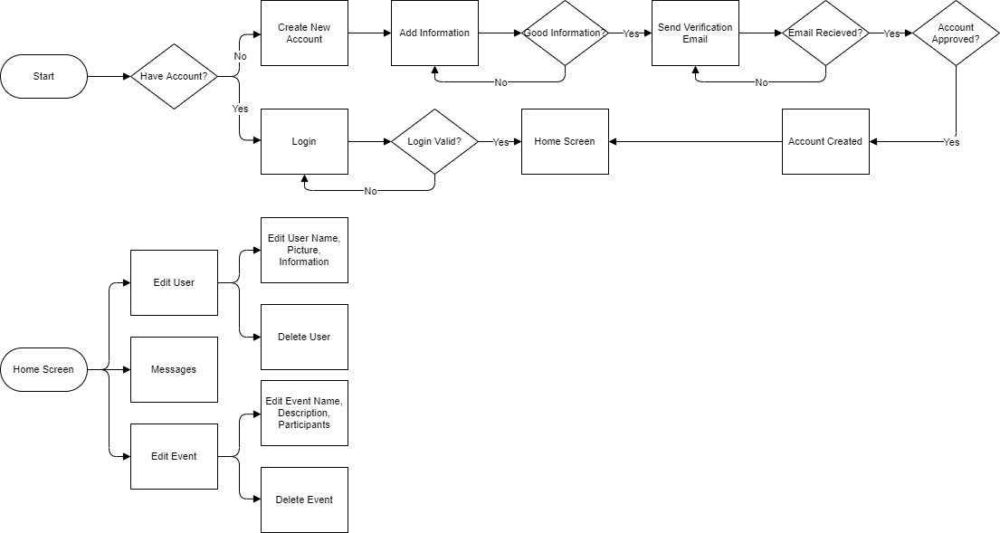7.4.2Commercial Workflow Diagram
The workflow technique is designed to give the person who uses it a layed out example of a User performing a task on the system. This takes things like logging in and breaks it down into its steps and decision logic. Decision logic is used to highlight spots in the code where something along the lines of an if statement will be needed. This represents a crossroads where a condition is met or is not. This graphic overview of these different processes makes all of the aspects of something more complicated like logging in, the logic behind it, and lays it out in an easy-to-understand manner. This is the Workflow Diagram for Commercial Users.
7.4.3Consumer Workflow Diagram
The workflow technique is designed to give the person who uses it a layed out example of a User performing a task on the system. This takes things like logging in and breaks it down into its steps and decision logic. Decision logic is used to highlight spots in the code where something along the lines of an if statement will be needed. This represents a crossroads where a condition is met or is not. This graphic overview of these different processes makes all of the aspects of something more complicated like logging in, the logic behind it, and lays it out in an easy-to-understand manner. This is the Workflow Diagram for ConsumerUsers.
7.5Front-End Data and Information View Design
This view focuses on the flow of information and data as the program operates. There is no particular sequence of events. Of course everything begins when a user either creates an account or logs into their account. This can be done by entering credentials manually, or creating/signing in via another social media profile such as Facebook. Accounts can be one of three levels of privilege: Consumer, Commercial, or Admin User. Each type of user can view the accounts of other users, but not change any information. Each user has a way to create or edit events, and as such need access to the events database. As well each user has the ability to edit their profile, and need access to the database to make and save changes to their profile. Upon creation of a Consumer User account, a help feature may guide the new user around to show them how to operate the application. Similarly, upon the creation of a Commercial User account a “Tooltips” feature appears to showcase more ways to operate a commercial user account.
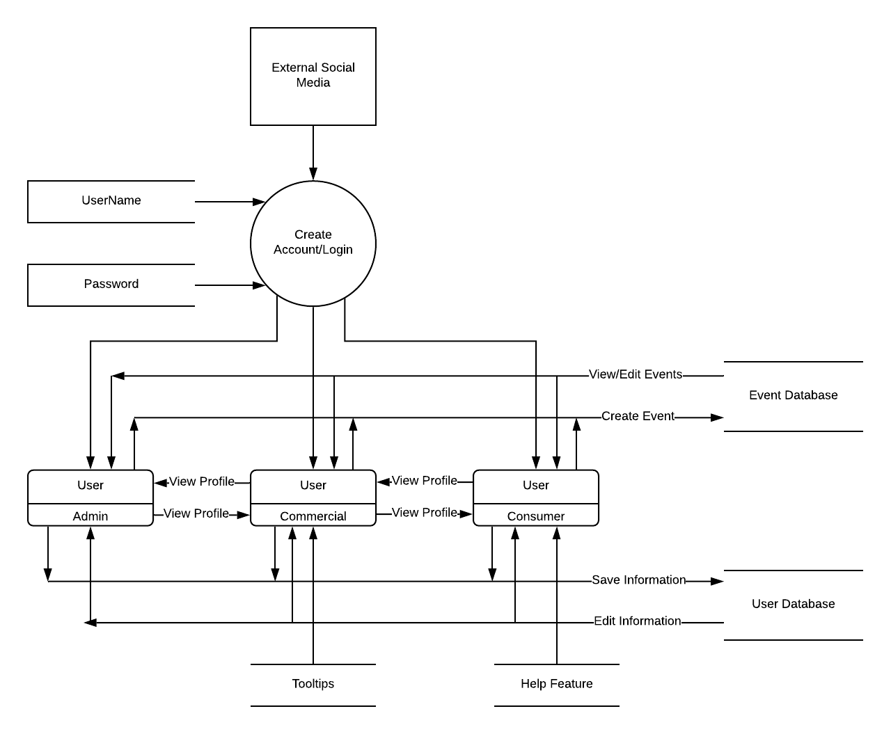7.6Entity Relationships
An entity relationship diagram (ERD) shows the relationships of entity sets stored in a database. An entity in this context is an object, a component of data. An entity set is a collection of similar entities. These entities can have attributes that define its properties[1]. For the Uvents project, this diagram is built based on the 3.5 Logical Database Requirements section of the SRS. It consists of 14 tables that will hold both user and application data[2]. This database will be stored remotely and the users will have to have an Internet connection to be able to access this database. All the information downloaded from there will be streamed to let the user get the most updated information. The information, channels, and all connections must be secure to protect both users and stakeholders.
7.7Project Viewpoint
Project viewpoint is one of the design techniques. It is a way to divide the whole project into pieces using teams or small projects. In our scenario, I would like to divide the project into each type of user. Then each type of user has its own special project.
8Model
The Model of the Uvents application acts as….
8.1Model Communication UML
The System will use encrypted communication channels for communication between the mobile application and the server. The system will use encrypted communication channels for communication between the server and the database. Facebook login credentials will be able to be used as an option for logging into the mobile application and as a means of authentication. This system of communication will ensure the privacy of the user and ensures that the data transferred can be predictable.
8.1.1Communication UML Login View
The System will use encrypted communication channels for communication between the mobile application and the server. The system will use encrypted communication channels for communication between the server and the database. Facebook login credentials will be able to be used as an option for logging into the mobile application and as a means of authentication. This system of communication will ensure the privacy of the user and ensures that the data transferred can be predictable.
8.1.2Communication UML Edit/View Profile View
This diagram shows the flow of communication when editing and viewing a profile. The user will click the button to view or edit. That will then be sent to the server and the server will retrieve data from the database. The information will now be adjustable. The user can adjust their profile, and upon completion may save it to the database. The server will perform some validation and upon completion an update success view will be sent to the app and it will then be saved to the database.
8.1.3Communication UML Create New Consumer/Commercial/Admin Profile Event
This diagram describes the flow of communication data during the creation of a profile. User input is passed from the app to the server to the database where it is validated. The validation processes performed against the database ensures that there are no duplicate users. Upon completion, a page confirming the success of profile creation is presented.
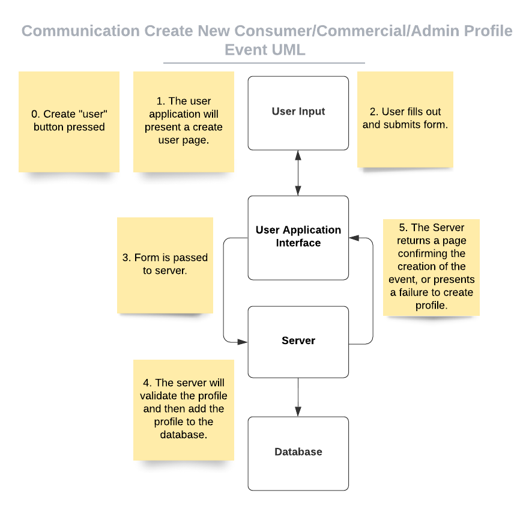8.1.4Communication UML Create Manage Event
This diagram shows the flow of communication when creating and managing an Event. The User will click the button to create an Event. That action will then be sent to the server. The server will validate the Event and add it to the database. A page will appear to show if the event was created or if there was a failure. The User can then edit the details of the event and then save it to the database.

Database Design
- (selection) For designing our database, we will use the following design plan modified from the steps found in [1]:
- Find and organize required information
- Divide information into tables
- Turn information items into columns
- Specify primary keys
- Set up the table relationships (foreign keys)
- Apply Normalization Rules
- (implementation) Steps a-e of the design plan were completed in the SRS. The database is already divided into tables, each of which has a primary key, and all foreign relationships have been identified. This leaves us with only applying
the Normalization Rules. The normalization rules we will apply are as follows, found at [1, 2]:
- First Normal Form
- Every data item (intersection of a column and row) contains only a single value, and not a list of values.
- Values stored in a column should be of the same domain (e.g. an address column should not sometimes contain a lat-long and at other times contain a written address).
- All columns in a given table should have unique names (e.g. start time and end time for an Event should not both be called simply “time”)
- The order in which data is stored doesn’t matter
- Second Normal Form
- Database is in the First Normal Form
- Non-key columns are dependent on the entire primary key., not just part of it. In our database, there are no multi-column primary keys, so this is irrelevant.
- Third Normal Form
- One non-key column in a table does not depend on any other non-key column in that table. (E.g. if there were a first name, last name, and full name column in one table, and the full name was derived from the first name and last name, then this rule would be violated. Changing one value in the table should not necessitate the change of another value as well.
- First Normal Form
Data Types
Event Table
The Event Table chart demonstrates what is being stored, and what data-type is being used to display it.
Event Media Table
The Event Media chart demonstrates what is being stored, and what data-type is being used to display it.
Consumer User Table
The Consumer User chart demonstrates what is being stored, and what data-type is being used to display it.
Group Event Table
The Group Event chart demonstrates what is being stored, and what data-type is being used to display it.
Commercial User Table
The Commercial User chart demonstrates what is being stored, and what data-type is being used to display it.
Structural Design Technique
- (selection) For the Structural Design Pattern we will be using the façade design pattern. This will allow us to create classes in the program that are easier to use many times in in many circumstances without the complexity of knowing all the underlying functions and how they work..
- (implementation)We will use the façade design technique specifically to implement classes that involve the User class. The application has three unique users: admin, consumer, and commercial, but these users all share some similarities. These similarities included ID’s names, and etc. They also share similar functions, such as logging in and creating events. The façade design pattern will allow us to simplify these shared functions so that a single function call can be made where several might otherwise be necessary so that the client does not need to keep track of a lot of unnecessary or repetitive functions.
- (charts) The first chart shows how the client may use simply a login function providing the username and password as parameters. Then, the server can verify that the given username exists and that the password is correct and return an ID. The application will then direct the user to the home page as a validated user.
The second chart shows how the Client may simply use a createEvent function (providing the data to be used in creation, e.g. start time, end time, description, etc.). The server will then validate that the data is appropriate (the correct data types and allowed for that sort of user), insert the data into the database, and return the new event ID to the client. The application will then direct the user to the event page for their new Event.
Entity Relationship
- (selection) For the Entity Relationship design, we will be using the Entity Relationship Diagram. This will allow us to specify, visualize, construct and document artifacts of data.
- (implementation)We will use the Entity Relationship Diagram technique to specifically visualize and construct data, including relations of columns to each table and among each table. We will apply the following steps to complete the design:
- Identify all the entities in the system. An entity should appear only once in a particular diagram. Create rectangles for all entities and name them properly.
- Identify relationships between entities. Connect them using a line and add a diamond in the middle describing the relationship.
- Add attributes for entities. Give meaningful attribute names so they can be understood easily.
- A few things to notice:
- Provide a precise and appropriate name for each entity, attribute, and relationship in the diagram. Terms that are simple and familiar always beats vague, technical-sounding words. In naming entities, remember to use singular nouns. However, adjectives may be used to distinguish entities belonging to the same class (part-time employee and full-time employee, for example). Meanwhile attribute names must be meaningful, unique, system-independent, and easily understandable.
- Remove vague, redundant or unnecessary relationships between entities.
- Never connect a relationship to another relationship.
- Make effective use of colors. You can use colors to classify similar entities or to highlight key areas in your diagrams.
Data Flow
9Controller
The Controller section represents the interface of the Uvents application server with the other two components of the application, namely the Model and the View interfaces. The Controller acts as a logical middleman between the Model and the View, as it pulls requested data from the Model and updates the View with received data.
9.1 Server Process Flow (PF)
The Server PF acts as a representation of the course of actions to be taken. It is also known as the Process Flow Diagram (PFD). This is a very accommodating tool for showings the relationship between major components throughout the project. The major parts of the Server Process Flow consist of a Start/Stop, Action, Decision, and a connector.
9.1.1 Join Event PF
The Join Event PF defines the process of interactions between the Server, Database, and Front-End for the following Design Concerns: 3.2, 3.3
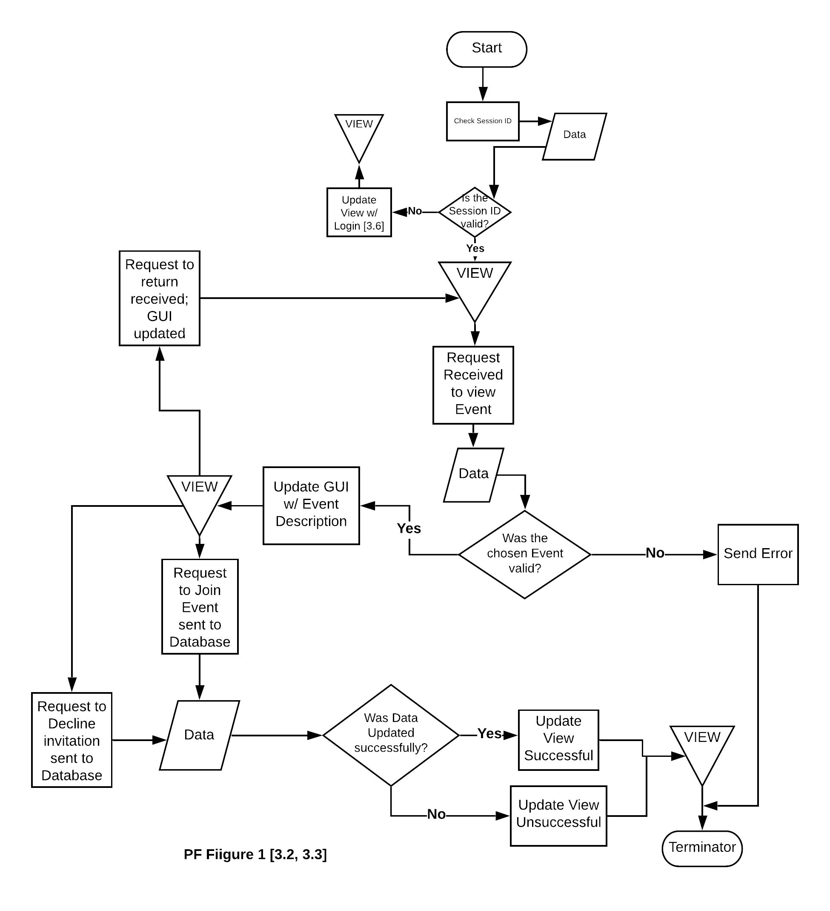9.1.2Update PF
The Update PF defines the process of interactions between the Server, Database, and Front-End for the following Design Concerns: 3.1, 3.4, 3.8, 3.21, 3.36, 3.39, 3.17
9.1.3Login PF
The Login PF defines the process of interactions between the Server, Database, and Front-End for the following Design Concerns: 3.6, 3.23, 3.38
9.1.4View Profile PF
The View Profile PF defines the process of interactions between the Server, Database, and Front-End for the following Design Concerns: 3.5, 3.22, 3.37
9.1.5Settings PF
The Settings PF defines the process of interactions between the Server, Database, and Front-End for the following Design Concerns: 3.15, 3.32, 3.44
9.1.6Reports PF
The Reports PF defines the process of interactions between the Server, Database, and Front-End for the following Design Concerns: 3.34, 3.35

9.1.7Edit Users/Events PF
The Edit Users/Events PF defines the process of interactions between the Server, Database, and Front-End for the following Design Concerns: 3.40, 3.41
9.1.8Messaging PF
The Messaging PF defines the process of interactions between the Server, Database, and Front-End for the following Design Concerns: 3.42, 3.43, 3.12, 3.14
9.1.9Posting Events PF
The Posting Events PF defines the process of interactions between the Server, Database, and Front-End for the following Design Concerns: 3.23, 3.7, 3.26, 3.28, 3.20
9.1.10Edit Information PF
The Edit Information PF defines the process of interactions between the Server, Database, and Front-End for the following Design Concerns: 3.19, 3.11, 3.10, 3.24, 3.27, 3.31
9.1.11Logout PF
The Logout PF defines the process of interactions between the Server, Database, and Front-End for the following Design Concerns: 3.33, 3.16, 3.45
9.1.12Business Information PF
The Business Information PF defines the process of interactions between the Server, Database, and Front-End for the following Design Concerns: 3.18
9.1.13Promote Event PF
The Promote Event PF defines the process of interactions between the Server, Database, and Front-End for the following Design Concerns: 3.29
9.1.14Start Auction PF
The Start Auction PF defines the process of interactions between the Server, Database, and Front-End for the following Design Concerns: 3.30
9.1.15Search Bar PF
The Search Bar PF defines the process of interactions between the Server, Database, and Front-End for the following Design Concerns: 3.9
9.1.16My Events Process Flow
The My Events PF defines the process of interactions between the Server, Database, and Front-End for the following Design Concerns: 3.13
9.2 Create Account Factory Pattern [4.1,4.16,4.34]
The Factory Pattern is an example of a type of Creation Design Pattern. Creational Design Patterns focus on the creation of objects and the ability to reuse existing code. The Factory Pattern follows this method by creating an interface that in turn, creates the objects in a superclass. The Factory Pattern for Creating an Account shows how a base account is represented and passed to different account objects, where these objects will add unique aspects to the base account in order to represent the different types of accounts that can be made.
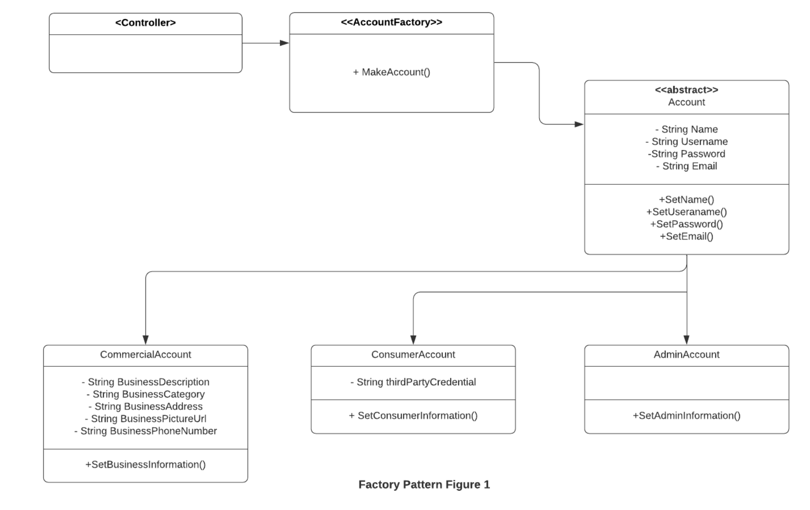9.3 State Diagram for Application states [4.1]
The State Diagram acts as a representation of states within a system, such as how water can move between states of liquid, solid, and gas. The State Diagram for Application states represents the different states offered to a Consumer User, Commercial User, and Admin User. These states display the transition from the application only being downloaded, to an account being created and logged into, and then the eventual logging out of the account.
9.4Server Class UML
The Class UML acts as a template for creating objects and implementing behavior within a system. The purpose of the Server Class UML is to provide a guide to implementing the classes and objects involved in the server-side of the Uvents application. These classes and objects are specifically tasked with requesting data from the Back-End and updating the Front-End with said data.

9.5Server Composite UML
The Composite UML acts as a representation of relationships between classes and objects. Composite UMLs are produced off of a predefined Class UML, as was the Server Composite UML, which was designed off of the Server Class UML. [8.3] The Server Composite UML displays relationships between the Event, Account, and Message classes on the server-side of the Uvents application.
9.6Sequence Diagram for Edit Profile
Sequence Diagrams are detailed diagrams that show how operations are carried out. They are commonly used to show how objects interact in a sequence to understand the detailed functionality of a system. It depicts the interaction between chosen objects in the order the interactions take place. A typical Sequence Diagram consists of various objects, lifelines, activation occurrences, and loops to depict the necessary details of the interactions between the objects.
9.7Server Control Flow
The Server Control Flow lists the order of instructions that the controller will follow. It contains the necessary user input as well as some of the checks that are performed. It shows how data flows from the view through the controller and to the model. The control flow lists the order of instructions that the controller will follow. It contains the necessary user input as well as some of the checks that are performed. It shows how data flows from the view through the controller and to the model.

9.8Server Flow-Chart
The Server Flow-Chart displays the order of actions that will be performed as a certain function is running. It also displays all related functions and their relations to them as it pertains to actions. The arrows show the direction of each function and the order that it happens, diamonds represent a choice being made, in this case it mostly used to validate whether the information inputted is valid information. Cylinders represent the database that we are storing user data. This specific flow chart shows us how data is being inserted and taken from the database

9.9Server Functional Flow Chart
The Server Functional Flow Chart displays the order the at functions can and will be called for the controller. The arrows point to the functions that can be called from that function. Most of the flow charts start with a verification, so that the program uses the correct data. After the verification, they will proceed to get data from the model or send data to the model.

10Design Languages
Uvents will be developed on mobile platforms, IOS and Android. Here is a list of follow programming languages and technologies that will be used to create the Uvents application:
For IOS
- Swift (Language)
- MySQL (Database)
- XCode9 (Programming Environment)
For Android
- Kotlin (Language)
- MySQL (Database)
- Android Studio (Programming Environment)
To be able to provide usability to all mobile platforms the application will have two sets of criteria for it’s Design Languages. To have the application work on All Android device Uvents will be built on Android Studio using Kotlin for both the Frontware and Middleware. And MySQL will be used for the back end or the database. To have the application work on All IOS device Uvents will be built on Xcode9 using Swift for both the Frontware and Middleware. And MySQL will be used for the back end or the database.
10.1System Engineer View (Layering)
The System Engineer View, designed through the layering technique, presents conceptually how the entire system will work together. This may be done through one of two previously mentioned routes, depending on the Uvents User’s operating system.